Genel Bilgiler
Topografik Dosya Türleri
Harita ve Topografya Arası Dönüşümler
Topografik Dosya Yönetimi
Topografya Verileri İçeren Genel Dosya Yükle
Topografya Seçenekleri
Topografik Noktaların Düzenlenmesi
Ön-Ağların Düzenlenmesi
Kullanıcı Ağlarının Düzenlenmesi
Kontur, Kapalı Sınır ve Adacıkların Düzenlenmesi
Otomatik Ağların Düzenlenmesi. Üçgenleme
Eşyükselti Eğrileri Oluşturma. Tesviye Eğrileri
Diğer Araçlar
Genel Bilgiler
Programın bu alanı, tekil noktalardan oluşan bir nokta bulutundan (arazi topografik çalışmalarından elde edildiği gibi) bir sayısal arazi modeli oluşturmaya ve bunu üçgen ağ modeline dönüştürmeye, ayrıca bunları temsil eden 3D çizgi ve eşyükselti eğrileri haritasını elde etmeye adanmıştır.
TOPOGRAFYA menüsüne hem programın araç çubuğundaki  simgesi aracılığıyla hem de Araçlar → Topografya menüsünden erişilebilir. simgesi aracılığıyla hem de Araçlar → Topografya menüsünden erişilebilir.
[Bitir]: İşlevi menüden çıkmaktır. Bu çalışma ortamından ayrıldığınızda, düğüm noktaları, ağlar ve üçgenler verileri bellekten silinmese de kaybolur. Yine de, verileri kaydetmiş veya EDM'ye dönüştürmüş olmanız tavsiye edilir, bu nedenle program ekranda çıkışı onaylamanızı isteyen bir uyarı gösterir.
TOPOGRAFYA menüsünden çıkıldığında, düğüm noktaları, ağlar ve üçgenler bellekten kaldırılmaz. Bu bilgi, örneğin ENKESİTLER menüsünde (GÜZERGAH PROJESİ modülü), arazi enkesitlerini (SAM seçeneği) çıkarmak için kullanılabilecek bir sayısal arazi modeli oluşturur.
Yapılandırma → Tercihler → Görselleştirme menüsündeki SAM'ı Göster seçeneği, bu ağların TOPOGRAFYA menüsü dışında görüntülenmesini etkinleştirmeyi/devre dışı bırakmayı sağlar. Açıkçası, TOPOGRAFYA'ya geri dönüldüğünde bu bilgi kullanıcı için hala mevcuttur.
Topografik Dosya Türleri
Giriş verileri .top, .toc (daha yaygın olan), harita dosyaları .edm, .ttp dosyaları, grid dosyaları (ASCII GRID tipi) vb. dosyalardan gelebilir. Aşağıda en yaygın olanlar açıklanmaktadır, ancak bu, programın Araçlar → Dönüştürücüler'den erişilebilen daha fazla dosya türünü kabul etmediği anlamına gelmez.
Soru işareti (?) kutucuğuna tıklandığında, bir .top veya .toc dosyasına dönüştürmek için yükleyeceğimiz dosyaya benzer olması gereken bir giriş dosyası örneği gösterir.
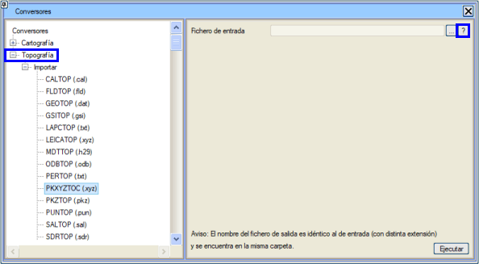
.top Dosyaları
Bunlar, her nokta için 6 sayısal veri içeren (boşluklarla ayrılmış) ASCII kodlu dosyalardır ve şu formattadır:
I J K
X Y Z TXT
burada:
| I |
Noktanın kimlik numarasıdır. |
| J |
Eğer belirli bir poligona aitse (şev başı veya eteği, yol kenarı, nehir kenarı vb.), noktanın sıra numarasını temsil eder. Dosyadaki birkaç ardışık nokta, sıra numaraları artan düzende ise bir poligon tanımlar. Örneğin, bir .top dosyasındaki 5 ardışık nokta, sıra numaraları 0 1 2 3 4 5, 1 2 3 4 5, 1 4 5 7 8 ise bir poligon tanımlar; yani, bir nokta, sıra numarası önceki noktanınkinden büyükse, önceki noktayla bir poligon oluşturur. Öncekinden küçük veya eşit bir kod, diziyi bozar. |
| K |
Noktanın ait olduğu çizgi tipini belirtir. Eğer tek noktalı diziler söz konusuysa, bunlar tekil noktalar olarak yorumlanabilir, böylece bu kodu nokta tipi olarak kullanarak haritaya aktarılabilirler. Bu değere aynı zamanda nokta kodu da denir. |
| X Y Z |
Noktanın koordinatlarıdır (genellikle metre cinsinden, gerekirse ondalık nokta ile).
|
| TXT |
Bir metin kabul edebilen isteğe bağlı bir son sütundur. Bu metinler, topografya noktaları düzenleme menüsünden düzenlenebilir. |
Örnek:
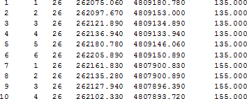
Ayrıca, ikinci sütunun örnekte görüldüğü gibi tek bir sabit değer olduğu, tek bir çizgiyi (örneğin, belirli bir aralıkta noktaları olan bir güzergah projesi ekseni) temsil eden .top dosyaları da olabilir:
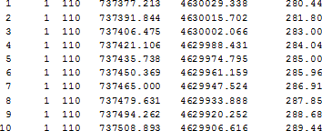
Bu tür topografik dosyalar, .toc formatındaki dosyalar lehine kullanımdan kalkmıştır.
.toc Dosyaları
.toc formatı, klasik .top'tan daha kullanışlı ve yaygın olan, tekil veya düz kenarlı ve tek başına veya karışık dairesel yaylarla poligonlar oluşturan nokta zincirlerini, araziden kodlanmış olarak getirmek için bir arazi topografyası formatıdır.
Topografın arazide aynı anda birkaç zinciri bitirmeden alıp tamamlamasına olanak tanır; öyle ki, örneğin, bir sokak kenarı çizgisi, bir kaldırım bordürü ve bir bina çizgisi, sokakta ilerlerken bir o çizgide bir bu çizgide olmak üzere dönüşümlü olarak noktalar alarak alınabilir; birini bitirip diğerine geçmeden önce bitirme zorunluluğu yoktur, araya tekil noktalar serpiştirilebilir.
Bir noktanın birden fazla kodu olabilir, çünkü bir parsel sınırı ile bir yolun kesişimi olabilir (virgülle (,) ayrılmış birkaç kod-komut çifti, toplamda en fazla 15 karakter olacak şekilde bildirilir). Bir kaldırım kenarı düz bölümlerden oluşabilir ve köşeye geldiğinde, bir başlangıç noktası, eğriyi tanımlamak için gereken kadar ara nokta (minimum bir nokta) ve bir bitiş noktası ile temsil edilen bir daire yayı ile devam edebilir, ardından düz segmentli poliline devam edebilir veya istenirse bitirilebilir. Bir döner kavşak, sadece üç nokta veya onu temsil etmek için gereken kadar ara nokta ile alınabilir (plan veya kot nedenleriyle).
Çizgi tipini ve zincirlemeyi bildiren kodlar kullanıcı tarafından tanımlanabilir, ancak programın varsayılanları vardır.
.toc dosyaları, her nokta için 4 sayısal veri (boşluklarla ayrılmış) ve isteğe bağlı bir karakter dizisi içeren ASCII kodlu dosyalardır ve şu formattadır:
I X Y
Z TXT
burada:
| I |
Noktanın kimlik numarasıdır. |
| X Y Z |
Noktanın koordinatlarıdır (genellikle metre cinsinden, gerekirse ondalık nokta ile). |
| TXT |
Bir metin kabul edebilen isteğe bağlı bir son sütundur. Bu metinler, daha sonra göreceğimiz topografik nokta düzenlemesinden düzenlenebilir.
Her metin XXX YY #yorum formatında olabilir; burada XXX üç karakterli bir koddur ve YY bir komuttur.
YY, bir veya iki karakterden oluşabilir (komuta bağlı olarak) ve örneğin bir poliline veya bir daire tanımlamak için farklı değerler alabilir:
B → Zincir Başlangıcı.
S → Zincir Sonu.
K → Polilini, bu noktadan zincirin ilk noktasına bir segment ile kapatır.
Aynı noktada birkaç komutla birkaç kod yorumlamak da mümkündür, örneğin, EDF B,BAC S dizisi bina başlangıcını ve kaldırım kenarı sonunu belirtebilir. |
Komutları yorumlarken, zikzak şeklinde okunan iki zincir üzerindeki verilerle bir .toc dosyasından yola çıkmak mümkündür ve o zaman, aynı koda sahip olanları komutları takip ederek zincirleyecektir:
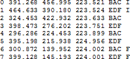
.toc dosyalarının yüklenmesi sırasında, alışılmış zincirleme komutlarından sonra, orijinal zincire bir paralel oluşturan H0.20 V-0.50 gibi iki komut yerleştirilebilir. Demo çalışma klasöründeki NUBE.toc örneğine bakın.
Ayrıca, ilk alanı sayısal bir değer yerine bir dize olan .toc dosyalarının yüklenmesine de izin verilir. Örneğin, bir noktanın ilk alanı BR001A olabilir. Program, bu alanı yüklerken, her sayısal olmayan karakteri bir 1 ile değiştirerek ve sayısal değerleri olduğu gibi koruyarak 110011 ile değiştirecektir.
Harita Dosyaları .edm/.edb
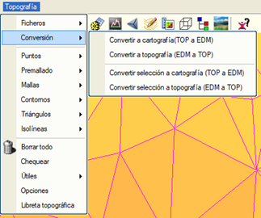TOPOGRAFYA aracı, üçüncü bir giriş dosyası türü olan .edm /.edb harita dosyalarını kabul eder; bu dosyalar, topografik noktalar (veya düğüm noktaları) ve ağlar içerecek olan .top/.toc tipi dosyalara dönüştürülebilir.
Bu noktalar, üçgenleme ağları ve üçgenlerin kendisi, EDM ortamının grafik nesneleri değildir, yani haritaya ait değildirler ve sadece bu menünün seçenekleriyle işlenebilirler. Buradan çıkıldığında erişilemezler ve bu nedenle, karşılık gelen grafik nesneleri (noktalar ve çizgiler) topografik elemanlardan (düğüm noktaları ve ağlar) elde etmeyi sağlayan bir dönüşüm gerektirirler. Bu dönüşümün nasıl yapılacağı daha sonra açıklanacaktır.
Noktalar veya düğüm noktaları, bu ortam için temel sayısal arazi modelini oluşturur. Düğüm noktaları, üç olası türden birinin ağlarıyla ikişer ikişer zincirlenir: programın oluşturdukları (otomatik veya üçgenleme), giriş veri dosyasında tanımlananlar (ön-ağ) veya kullanıcının interaktif olarak ekledikleri (manuel veya kullanıcı). Birinciler eflatun renkte, ikinciler camgöbeği renkte ve sonuncular mevcut çizgi tipinin renginde sunulur.
Üçgenler, üçlü ağlar arasındaki mantıksal ilişkiyle oluşur. Ağlar modeli, paftalar, kesitler vb. elde etmek için programın başka bir alanında kullanılmak istenirse, daha önce belirtildiği gibi uygun dönüşümü yapması gereken bir sayısal arazi modeli oluşturur.
Geçici Topografya Dosyaları .ttp
.ttp dosyaları, bir topografik düzenlemenin ara durumunu (düğüm noktaları, ağlar, üçgenler, kapalı sınırlar ve adacıklar,...) içeren topografya dosyalarıdır; bu da işe farklı oturumlarda ve bırakıldığı aynı durumdan devam etmeyi sağlar.
Bu dosyalar aynı zamanda üçgenlemeler ve dolayısıyla yüzeyler de içerebildiğinden, VIRTUAL 3D, GÜZERGAH PROJESİ modüllerinde ve YÜZEY MODELLEME modülünün belirli hacim hesaplama seçeneklerinde, .dxf formatında "3D yüzeyler" (3D faces) tipi dosyalar oluşturmak için vb. programın farklı bölümlerinde kullanılırlar.
Bellekte birden fazla üçgenleme yüklü olması mümkündür. Program, Kontrol → SAM Kontrolü'nden erişilebilen bir .ttp dosyası yöneticisine sahiptir.
Grid Dosyaları (LIDAR), LandXML Dosyaları ve Diğer Dosya Türleri
Grid dosyaları, belirli bir yoğunluğa göre eşit aralıklı nokta bulutlarıdır. Çok kullanılan uluslararası bir formattır. ASCII-GRID durumunda, .txt, .grd veya .asc uzantısına ve aşağıdaki gibi bir formata sahip olmalıdır:
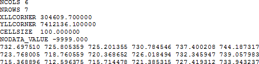
LandXML dosyaları, bu standart ve .xml uzantılı bir dosyaya göre kaydedilmiş üçgenlemelere karşılık gelir.
.xyz uzantılı dosyalar, her noktanın sadece X,Y,Z koordinatlarını içeren, boşluklarla veya sekmelerle ayrılmış 3 sütunlu ASCII dosyalarıdır.
.3d dosyaları, TOPOGRAFYA'nın kendisi de dahil olmak üzere, program tarafından farklı menülerde oluşturulan üçgenleme dosyalarıdır. Kullanıcıya, burada yüklenebilmelerinin yanı sıra, Dosya → Dışa Aktar menüsünden doğrudan .dxf 3D-yüzeyler (3D-faces) formatına da dışa aktarılabilecekleri hatırlatılır.
.asc uzantılı dosyalar, her noktanın sadece X,Y,Z koordinatlarını içeren, virgülle ayrılmış 3 sütunlu ASCII dosyalarıdır.
Harita ve Topografya Arası Dönüşümler
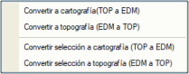Topografya > Dönüşüm açılır menüsünden, EDM'nin çizgilerini, sembollerini ve metinlerini topografik ağlara ve noktalara dönüştürmeyi sağlayan seçeneklere ve tersine erişim sağlanır.
Ayrıca, bir nesne seçimini topografyaya/haritaya dönüştürme imkanı da mevcuttur.
[Topografya] → [Dönüşüm] → [Topografyaya Dönüştür (EDM -> TOP)] seçeneği çalıştırıldığında, program EDM nesnelerini silmenize olanak tanıyan bir pencere açar.
Sembol özniteliğini nokta no'ya ata kutucuğu etkinleştirildiğinde, program, eğer varsa, kaynak sembolün özniteliğinin tamsayı kısmını topografik nokta numarası olarak atar. Bu kutucuk işaretlenmezse, her şey bir topografya dosyasına dönüştürüldükten sonra tüm noktalar yeniden numaralandırılır.
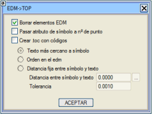
Kodlarla .toc oluştur. Bu araç sayesinde, metinlerin kod şeklinde sembollerle ilişkilendirildiği bir haritadan bir .toc dosyası oluşturulabilir.
Ters dönüşüm, [Topografya] → [Dosyalar] → [Haritaya Dönüştür (TOP -> EDM)] seçeneği ile yapılır; bu seçenek, topografya noktalarını ve/veya ağlarını EDM sembollerine ve çizgilerine dönüştürmekten sorumlu olan ve iki bölüme ayrılan bir iletişim kutusu açar. Dönüştür kutucuğundan, aşağıda göreceğimiz farklı seçeneklere bağlı olarak dönüşümü gerçekleştireceğiz (ayrıca nesne seçimiyle haritaya dönüştürme (TOP -> EDM) de yapılabilir):
1. Ağlar: Eğer topografik ağlardan EDM polilineleri oluşturulmak isteniyorsa, Ağları Çizgilere Dönüştür kutucuğunu işaretlemek gerekir. Eğer üçgenleri dört noktalı kapalı polilinlere dönüştürmek isteniyorsa, Üçgenleri Polilinlere Dönüştür'ü işaretlemeli ve polilinelerin hangi çizgi tipiyle oluşturulacağını seçmeliyiz.
Ağlar şunlar olabilir:
- Kullanıcı (K): Topografik düğüm noktalarını interaktif olarak birleştirerek oluşturulanlardır.
- Ön-Ağ (Ö): Giriş veri dosyasında tanımlanmış olanlardır; ya bir .top/.toc dosyası (anahtarlar ve kodlar), bir .ttp dosyası (geçici topografya) aracılığıyla ya da EDM'den dönüşümden geldiği ve her orijinal köşe noktasına ve sembole, anahtarı geldiği tip olacak olan bir topografik düğüm noktası atandığı için.
- Otomatik (O): Programın üçgenleme algoritmasıyla oluşturduklarıdır.
- Ağ Tipi (K-XX, Ö-XX, O-XX, XX poliline numarasıdır): Ağa belirli bir çizgi tipi atanabilir. Bu daha sonra Ağ Editörü'nde görülecektir.
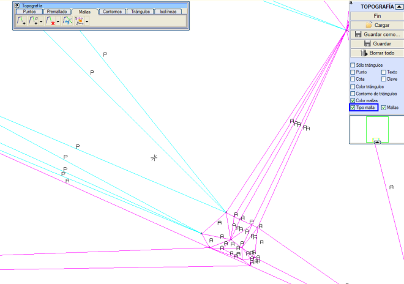
Bu resimde, Ağ Tipi kutucuğu etkinleştirildiğinde, tanımladığımız ağları tanımlayan metinler ekranda dinamik olarak gösterilir.
Ardından dönüşümü nasıl yapacağımızı belirteceğiz:
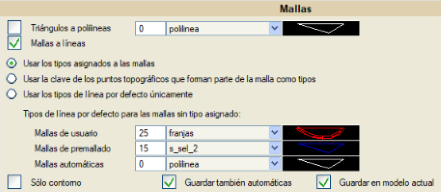
- Ağlara atanan tipleri kullan: Program, kullanıcı, ön-ağ ve otomatik ağları, sırasıyla Kullanıcı ağları, Ön-ağlar ve Otomatik ağlar kutucuklarında belirttiğimiz çizgi tiplerine göre dönüştürecektir. Tipe göre ağlar (K-XX, Ö-XX, O-XX) durumunda, ağın kendi sahip olduğu çizgi tipini alacaktır.
Bu seçenek seçildiğinde anahtar dikkate alınmaz.
- Ağın bir parçası olan topografik noktaların kodunu tip olarak kullan: Bu kutucuk aracılığıyla program, her bir topografik düğüm noktasının koduna göre çizgiye dönüştürecektir. Kullanıcı ağları, Ön-ağlar ve Otomatik ağlar kutucuklarında tanımladığımız değerleri dikkate almayacaktır.
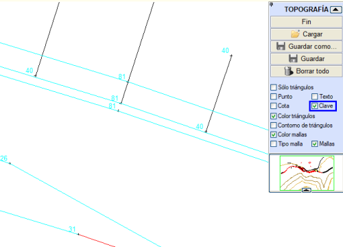
- Yalnızca varsayılan çizgi tiplerini kullan: Bu seçenek ilkiyle aynıdır, ancak bu durumda, tiplerine göre tanımlanmış olan ağlar, kullanıcı, ön-ağ veya otomatik kutucuklarında tanımlanan çizgi tipine dönüştürülür ve ağın kendi sahip olduğu çizgi tipine dönüştürülür.
Aynı ağın tüm noktalarının aynı koda sahip olması gerektiği konusunda uyarmak gerekir, aksi takdirde tekil nokta olarak kabul edilir.
Eğer Sadece Kontur onay kutusu etkinleştirilirse, yalnızca iki tarafından birine üçgen bağlı olmayan kullanıcı ağları kaydedilecektir. Eğer konturda otomatik ağlar varsa, ilgili seçenek de etkinleştirilmelidir.
Otomatik olanları da kaydet seçeneği (varsayılan olarak etkindir), üçgenlemeden gelen ağların da aktarılmasına neden olur; aksi takdirde, sadece ön-ağ ve kullanıcı ağları dönüştürülür.
Program, bir ağdan gelen her çizgiyi, onu oluşturan noktalara atanan modele uygun olarak aktarır; ancak, her çizginin mevcut modelde oluşturulmasını sağlayan Mevcut modele kaydet kutucuğu etkinleştirilirse bu durum değişir.
2. Topografik noktalar: İletişim kutusunun bu ikinci bölümünde, topografik noktaların EDM sembollerine dönüştürülmesiyle ilgili çeşitli konular belirtilir; öncelikle böyle bir dönüşümün yapılıp yapılmayacağı belirtilerek başlanır, bu nedenle, evet ise, Noktaları Sembollere Dönüştür kutucuğunu işaretlemek gerekecektir.
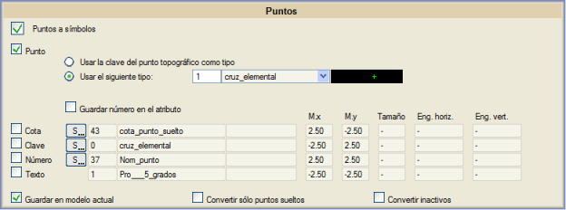
Ağlarda olduğu gibi, her topografik nokta, belirtilen tipte bir EDM sembolüne (Aşağıdaki tipi kullan seçeneği, varsayılan olarak tip 1) veya koduna uygun olarak (Topografik noktanın kodunu tip olarak kullan seçeneği) dönüştürülür. Ayrıca, Mevcut modele kaydet kutucuğu etkinleştirilerek, tüm noktaların atanan modele saygı duymak yerine mevcut modele geçmesi zorlanabilir.
Numarayı özniteliğe kaydet seçeneği, oluşturulan EDM sembolünün özniteliğinin, geldiği topografik noktanın numarasına karşılık gelmesini sağlar. Bu şekilde, özniteliği etiketleyen bir sembol kullanılırsa, numarası temsil edilir.
Dönüşüm yapılırken ve ek olarak, her topografik noktayla ilgili diğer bilgiler de EDM'ye aktarılabilir. Bu bilgi, EDM'de sembol veya yazı şeklinde (değiştirilebilir düğmenin [S] veya [Y] göstermesine bağlı olarak), belirtilen noktaya olan mesafede (Ö.x ve Ö.y'de ifade edilen değerlere göre) oluşturulabilir ve şunlar olabilir:
- Kot
- Kod
- Nokta numarası
- Noktayla ilişkili metin. Bu durumda sadece yazı şeklinde EDM'ye aktarılacaktır.
Yazı şeklinde oluşturulan bilgilere, boyut ve ona göreli yerleştirme noktası (yatay ve dikey yakalama) belirtilebilir.
Bu iletişim kutusu dönüşüm tercihleriyle doldurulduktan sonra, sadece tekil (herhangi bir ağa ait olmayan) topografik noktaların mı yoksa tümünün mü aktarılacağı belirtilmelidir. Genellikle, bir topografyayı EDM'ye aktarırken, her ağ için bir yandan köşe noktalarıyla EDM çizgileri oluşturması ve diğer yandan bu köşe noktalarıyla çakışan topografik noktalardan semboller oluşturması istenmez, bu nedenle Tekil seçeneği işaretlenir.
Pasifleri Dönüştür kutucuğu aracılığıyla, topografyada aktif olmayan topografik noktalardan vazgeçilip geçilmeyeceği belirtilir.
Son olarak, EDM'yi oluşturmak için, iletişim kutusunun alt kısmında bulunan [Dönüştür] butonuna basmak yeterli olacaktır. Eğer bu dönüşüm seçeneği tekrar tekrar ve her zaman aynı yapılandırmayla kullanılıyorsa, sonraki oturumlarda yüklemek ve dönüşümü hızlı bir şekilde gerçekleştirmek için kaydetmek ilginç olacaktır. Alt kısımda bulunan [Kaydet]  ve [Yükle] ve [Yükle]  butonları bu görevi .cnv uzantılı dosyalar aracılığıyla gerçekleştirir. butonları bu görevi .cnv uzantılı dosyalar aracılığıyla gerçekleştirir.
Topografik Dosya Yönetimi
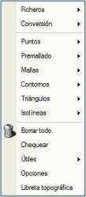[Topografya] → [Dosyalar] menüsü, bu modülü programın geri kalanıyla ve hem okuma hem de yazma düzeyinde harici dosyalarla iletişim kurmayı da sağlar. Bu şekilde, kullanıcı sayısal arazi modelinin hazırlanması için gerekli bilgileri yükleyebilir.
Tüm ara adımlar .ttp dosyalarına (geçici topografya dosyaları) kaydedilebilir ve bu dosyalar elbette herhangi bir zamanda yüklenebilir. Bu işlevsellik, büyük veri setleri için sürecin belirli aşamalarının hesaplama sürelerinin çok uzun olduğu düşünüldüğünde çok önemlidir, böylece süreçleri kaydetme fırsatı sunar.
Son adım olarak, nihai verileri, ya doğrudan uygun seçenekleri kullanarak verileri almaya hazır olan uygulamanın kendisine göndererek ya da daha sonra yüklenebilmeleri için dosyalara kaydederek kaydetmek mümkündür.
ISTRAM®/ISPOL®, Dosyalar → TTP/TTG Ekle seçeneği aracılığıyla iki üçgenlenmiş modeli otomatik olarak birleştirmeye olanak tanır.
Bu seçenek, bir .ttp veya .ttg dosyasını zaten üçgenlenmiş bir alana ekler ve bu alandaki orijinal üçgenleri .ttp/.ttg'ninkilerle değiştirir. Bu seçeneği kullanırken şunlar dikkate alınmalıdır:
- Ön-ağ (camgöbeği rengi) ve kullanıcı ağları her zaman korunur.
- Delaunay koşulu sağlandığında yakındaki otomatik ağlar bazı değişikliklere uğrayabilir.
Bu seçenek bir kenar boşluğu vermeyi sağlar, böylece orijinal ttp'den, eklenen ttp'nin konturu içinde kalan ve tanımlanan kenar boşluğuna kadar genişletilmiş tüm noktalar silinir.
Bellekte birden fazla üçgenleme yüklü olması mümkündür. Program, Kontrol → SAM Kontrolü'nden erişilebilen bir .ttp dosyası yöneticisine sahiptir.
Topografik Dosyaları Yükleme
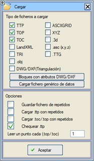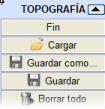[Topografya] → [Dosyalar] → Yükle menüsünden, üzerinde çalışmak üzere bir veya daha fazla topografik dosya okumak mümkündür.
Dosya seçiciden önce, yüklenecek dosya türünü filtrelemeyi ve belirli yükleme seçeneklerini belirtmeyi sağlayan küçük bir iletişim kutusu belirir. Farklı formatlarda olsalar bile aynı anda birden fazla dosya yüklemek mümkündür.
Yüklenecek dosya(lar) seçildikten sonra, program, kullanıcının yüklenecek alanı kısıtlamak için değiştirebileceği X, Y, Z minimum ve maksimumlarını içeren bir iletişim kutusu gösterir.
Yükleme sırasında nokta tekrarları kontrol edilebilir, bu nedenle kotları farklı olsa bile aynı düzlem koordinatlarına sahip iki nokta olamaz. Program, aralarındaki mesafe Topografya seçeneklerindeki tolerans parametresinde belirtilenden daha az olan iki noktayı tekrar eden nokta olarak kabul eder.
Bir .top/.toc dosyası yüklenirken noktalar okunur ve gerekirse, belirtilen tercihlere uygun olarak ilgili ön-ağ oluşturulur.
Bazen, bir .top/.toc dosyası, bir grid oluşturan eşit aralıklı bir nokta bulutuna karşılık gelir. Bu tür dosyalar genellikle çok yüksek sayıda nokta (yüzbinlerce veya milyonlarca) ve birbirine çok yakın aralıklı (yoğun bulutlar) içerir, bu nedenle işlenmesi biraz yavaş olabilir. Her x noktadan birini oku (.top/.toc) seçeneği, tüm noktaların mı okunacağını yoksa belirtilen aralıkla noktaların mı atlanacağını belirtmeye yarar, bu da çok yoğun verileri filtrelemeyi sağlar. Varsayılan olarak 1'dir ve böylece tüm noktalar okunur. Örneğin, her üç noktadan birini okumak istenirse, kullanıcı o alana 3 değerini girmelidir. Çok yüksek bir nokta ağı olması durumunda, bunu bir lazer veritabanı olarak ele almak daha iyi olabilir.
Eğer bellekte zaten bir .ttp dosyası varsa ve ardından başka bir dosya yüklenirse, kesişmedikleri sürece adacıklar ve kapalı sınırlar korunur. Adacıklar veya kapalı sınırlar arasında kesişmeler varsa, bir hata mesajı gösterilir ve yüklenmezler.
LandXML Yükle: Topografyada CgPoints içeren LandXML dosyalarının okunmasına izin verilir. Eğer "code" özniteliğine sahiplerse, bu noktanın kodu olarak yorumlanır. Eğer "name" özniteliğine sahiplerse, bir sayı olabilir, bu durumda noktanın numarasına atanır veya olmayabilir, o zaman noktaya başka bir kod olarak eklenir ve nokta numarası olarak 0 atanır. Böylece, LandXML dosyasından numarası atanamayan tüm noktalar 0 nokta numarasına sahip olur.
Tekrarlı .toc yükle. Varsayılan olarak devre dışıdır. Bazen, yorumlanması istenen komutlar geldiğinde veya harita olarak ele alınacağında, tekrarlı noktalar içeren bir .toc dosyası yüklemek ilginç olabilir. Bu seçenek etkinleştirilir ve tekrarlı noktalar içerebilecek bir .toc yüklenirse, üçgenlemeden önce, tekrarlıları ortadan kaldırmak için bir nokta kontrolü yapılmalıdır.
DWG/DXF öznitelikli bloklar: Bu kutucuk, DWG/DXF dosyaları içe aktarıcısına bir kısayoldur. Topografya içinde DWG/DXF dosyaları içe aktarıldığında, içe aktarılacak dosya(lar)ın analiz edilip edilmeyeceğini soran bir soru görüntülenir. Bunların blok içerip içermediği kontrol edilir ve bu durumda dosyalardan elde edilen bloklarla bir ekran gösterilir. Bu ekranda, hangi blokların topografyada nokta oluşturacağı belirtilebilir. 3D katıların okunması mümkündür.
Veri Görüntüleme
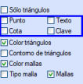Bilgi amaçlı olarak, her topografik noktayla ilişkili farklı veriler ekranda görüntülenebilir. Bunun için ekteki şekilde gördüğümüz Nokta, Kot, Metin ve Kod kutucukları kullanılır:
- Nokta numarası.
- Kot: Temsil edildiği ondalık basamak sayısı Topografya seçeneklerinden yapılandırılabilir.
- Noktayla ilişkili metin.
- Noktayla ilişkili kod (tip).
Renklendirme ile ilgili olarak:
- Üçgen Rengi
- Üçgen Konturu: Sadece üçgenlerin kenarını görüntülemek için etkinleştirilebilir. Bu seçenek "Üçgen Rengi" ile karşılıklı olarak dışlayıcıdır.
- Ağ Rengi
Nesne Türü:
Topografik Dosyaları Kaydetme
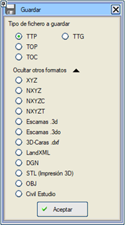[Topografya] → [Dosyalar] → Farklı Kaydet menüsünden, aşağıda gördüğümüz gibi çeşitli formatlarda topografik dosyalar elde etmek mümkündür. Ayrıca, Kaydet seçeneği, açık olan ttp'nin değişikliklerini, onay sormadan daha önce yüklenmiş olan aynı dosyanın üzerine kaydeder. Açık bir dosya olmadığında, "Topografia.ttp" olarak kaydedilir.
- TTP: Düğüm noktaları, ağlar, üçgenler, kapalı sınırlar ve adacıkların mevcut düzenleme durumunu içeren .ttp uzantılı bir dosya oluşturur. Geçici dosyalarda, her kullanıcı ağının oluşturulduğu çizgi tipi de kaydedilir. Bu tür dosyalar, mevcut topografik düzenleme durumuna başka bir zamanda devam etmeyi sağlar.
- TTG: Sadece noktaların koordinatlarını ve her üçgeni oluşturan noktaları içeren basitleştirilmiş bir .ttp gibi bir *.ttg dosyası kaydedilir. SAM Kontrolü'nden de yüklenebilir.
- TOP / TOC: Bu seçenekle, ekran noktaları seçilen formata bağlı olarak bir .top/.toc dosyasına kaydedilir.
- XYZ: Her noktanın üç koordinatına karşılık gelen üç sütundan oluşan .xyz uzantılı bir dosya oluşturur.
- NXYZ: Ayrıca .xyz uzantılı bir dosya oluşturur, ancak bu durumda dört sütunludur: nokta numarası, X koordinatı, Y koordinatı ve Z koordinatı. Topografik noktayla ilişkili Metni, NXYZT seçeneği ile bir .xyz dosyasına kaydetmeye izin verilir. Seçeneği görmek için, topografya kaydetme diyaloğunda "Diğer formatları göster"e tıklamak gerekir.
- NXYZC: Benzer şekilde, öncekiyle benzer bir .xyz uzantılı dosya oluşturur, ancak buna kod'a karşılık gelen beşinci bir sütun ekler.
- Yüzeyler .3d: Üçgenlerle bir .3d dosyası oluşturmayı sağlar; bu dosya, örneğin, görünürlük analizinin güzergah kayıpları çalışmasında kullanılmak üzere .dxf formatında bir "3D yüzeyler" (3D faces) dosyasına dönüştürülebilir, vb.
- Yüzeyler .3do: Virtual 3D® modülünde katıların gösterimi için kullanışlı bir 3D yüzeyler .3do dosyası oluşturur.
- 3D-Yüzeyler .dxf: Üçgenlemeyi, farklı GPS ekipmanları ve modelleme programları tarafından doğrudan okunabilen .dxf formatında kaydetmeyi sağlar.
- LandXML: Uluslararası LandXML standardıyla uyumlu .xml uzantılı bir dosya oluşturmayı sağlar; dışa aktarılacak dosyanın yazılacağı sürümü seçmeye izin verilir.
- DGN: Üçgenlemeyi bir Microstation dosyasına (.dgn) kaydetmeyi sağlar.
- Civil Estudio: Civil Estudio formatına kaydetme seçeneği. Ayrıca, Civil Estudio'ya dışa aktarma şu yerlerde de mevcuttur:
- Güzergah Projesi->BOYKESİT->ARAÇLAR->Yüzeyi Üçgenle
- Güzergah Projesi->BOYKESİT->ARAÇLAR->Görünümdeki Yüzeyi Üçgenle
- Enkesit Düzenleme->YARDIMCI PROGRAMLAR->Yüzeyi Üçgenle
Seçimi TTP Olarak Kaydet
Bir topografik nokta seçimini, tüm noktaları seçilmişse ilgili ağlar ve üçgenlerle birlikte bir ttp olarak kaydetme seçeneği. Bu seçenek üst menüde, "Topografya", "Seçimi TTP Olarak Kaydet" içinde bulunur.
TTP/TTG Ekle/İlave Et
Bu algoritma, noktaları/üçgenleri zaten veri olan bölgelerde, olmayan bölgelerde veya kısmen çakışan ve kısmen çakışmayan bölgelerde bulunan bir TTP/TTG dosyasının bilgilerini eklemeyi sağlar. Ardışık olarak eklenecek/ilave edilecek en fazla 10 dosya seçmek mümkündür.
Hızlı TTP Ekle
Bu araç, kontrol edilmiş ve en az bir kapalı sınıra sahip bir .TTP'den, yine önceden temizlenmiş ve kapalı sınırlarla belirlenmiş bir veya daha fazla .TTP'yi eklemeyi sağlar. Bu TTP'lerin sadece orijinal kapalı sınırlar içinde kalan kısmı eklenir. Bu algoritma, TTP/TTG Ekle/İlave Et algoritmasını önemli ölçüde hızlandırır.
Hızlı Veri Kaydetme ve Geri Yükleme
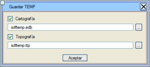[Topografya] → [Dosyalar] →[Geçici Kaydet] seçeneği ile, topografik verilerin mevcut durumunu, [Topografya] → [Dosyalar] → [Geçici Geri Yükle] seçeneği ile herhangi bir zamanda geri yüklenebilmesi için kaydedebilirsiniz.
Bu süreçte, program varsayılan olarak topografik verileri is#temp.ttp dosyasına (bu, Geri Yükle seçeneği ile yüklenen dosyadır) ve ayrıca haritayı is#temp.edb dosyasına kaydeder. İkincisi, diğer herhangi bir .edm/.edb dosyası gibi normal şekilde yüklenebilir.
Ancak, program bu geçici dosyaların adını değiştirmeye olanak tanır.
Sağdaki menüde, topografyayı geçici bir dosyaya kaydetmeyi ve yüklemeyi sağlayan butonlara hızlı bir erişimimiz var.
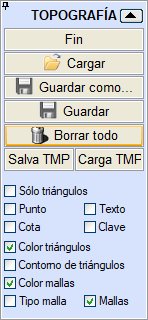
Topografik Dosyaları İçe Aktarma
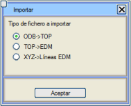Araçlar → Dönüştürücüler menüsünden kullanıcı, çeşitli topografik veri dosyası içe aktarıcılarına erişebilir. Bunlardan bazıları, aşağıda açıklandığı gibi, [Topografya] → [Dosyalar] → İçe Aktar menüsünden de doğrudan erişilebilir.
- ODB -> TOP: Bu seçenek, kullanıcının belirleyeceği .odb ve .cod dosyalarından bir .top dosyası oluşturacaktır. .top dosyalarının metin alanı, .odb dosyasından okunan koda ve komuta göre oluşturulacaktır.
- TOP -> EDM: .top dosyasının üçüncü sütununda tanımlanan tiplerle ve ağ kesişimlerini kontrol etmeden, .top dosyasının bilgilerini doğrudan EDM çizgileri ve noktaları olarak yükler.
- XYZ -> EDM Çizgileri: Bu seçenek, X eksenine paralel sıralar halinde düzenlenmiş .xyz dosyalarını yükler ve her sıra için bir EDM çizgisi oluşturur. Kullanılacak filtreleme mesafesini (Y yönündeki sıralar arasındaki mesafe) ister.
Önizleme ve Manuel Düzenleme
[Topografya] → [Dosyalar] → Düzenle menüsünden, kullanıcının seçeceği dosyayı bir tablo aracılığıyla değiştirmek mümkündür. Düzenlenebilir dosya türleri .toc, .top ve .ttp'dir.
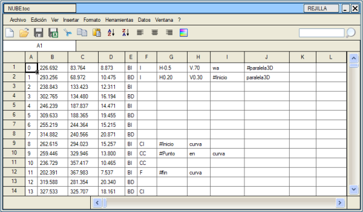
[Topografya] → [Dosyalar] → Görüntüle seçeneği, .top ve .ttp dosyalarının bir önizlemesini yapmayı sağlar.
.top/.toc Dosyası Oluştur
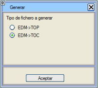 Çizgileri ve sembolleri ön-ağ düğüm noktalarına ve ağlarına dönüştürerek bir topografya dosyası (.top veya .toc) kaydetmeyi sağlar. Metinleri kaydetmez.
Topografya Verileri İçeren Genel Dosya Yükle
Topografya → Dosyalar → Topografya verileri içeren genel dosya yükle açılır menüsünden, aşağıda açıklayacağımız bir süreç aracılığıyla diğer formatlardaki dosyaları (örneğin .txt dosyaları) yükleyebiliriz.
Yüklenecek dosyayı seçtikten sonra, içe aktarma sihirbazı dosyanın okunmasına başlamak için bize iki seçenek sunacaktır:
- Sınırlanmış: Alanlar virgül veya sekme gibi karakterlerle ayrılmıştır.
- Sabit genişlikli: Alanlar belirli bir genişlikteki sütunlarda hizalanmıştır.
Bu ilk adımda, programa dosyanın hangi satırından içe aktarmaya başlamak istediğinizi belirtebilirsiniz.
Son olarak, İleri kutucuğuna tıklayarak içe aktarmanın bir sonraki adımına geçeceğiz.
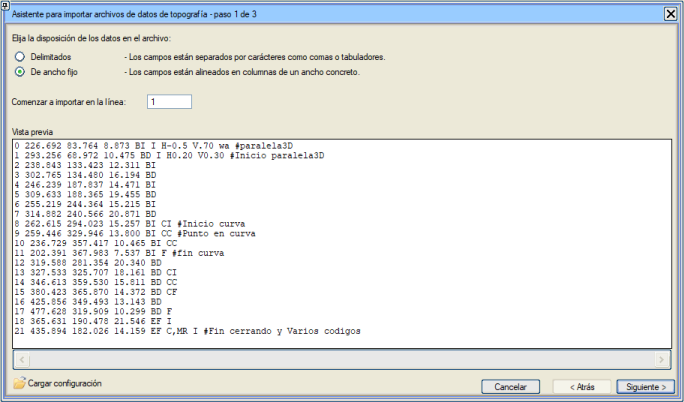
Sihirbazın yapılandırmasını yükleyerek, topografyada genel veri dosyalarını açmak için, birden fazla aynı veri dosyasını yüklemeyi kolaylaştırabilirsiniz.
İkinci adımda sütunlar arasındaki ayrımı belirleyebiliriz:
- Sekme
- Diğer: bir , veya bir . vb. olabilir...
Bu adımı tamamladıktan sonra İleri kutucuğuna tıklayacağız.
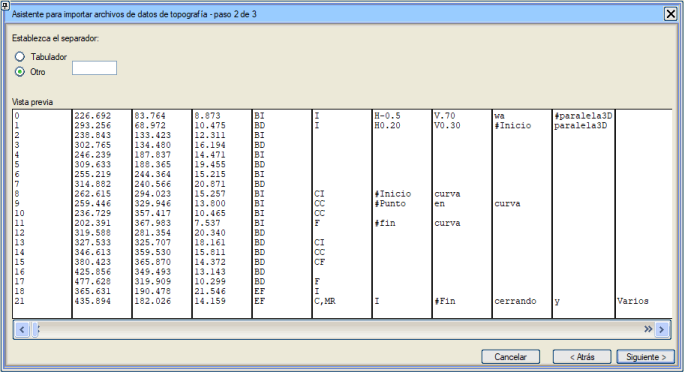
Bu son adımda, her sütuna noktanın numarasını, X, Y koordinatını, Z'yi (kot), kodu, metni veya modeli atayacağız.
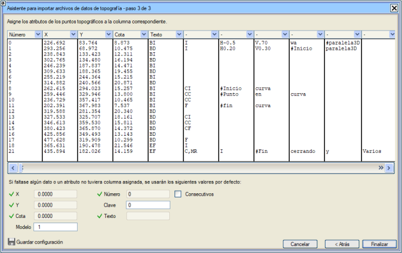
Sihirbazın yapılandırması kaydedilebilir.
İçe aktarmayı bitirmek için, ekranımızda yüklenen topografik noktaları görmek üzere Bitir kutucuğuna tıklamamız gerekecektir.
Topografya Seçenekleri
Yapılandırma → Tercihler → Seçenekler → Topografya menüsünden, [Topografya] → [Seçenekler] menüsü aracılığıyla da doğrudan erişilebilen, yüklemeyle ilgili aşağıdaki konuları yapılandırmak mümkündür:
Mevcut SAM (Sayısal Arazi Modeli) modellerinin ekranda yeniden çizimlerini hızlandırmayı sağlayan bir yapılandırma parametremiz var. Yapılandırma->Tercihler->Görselleştirme: Ekrandaki maksimum SAM noktası.
Mevcut Yakınlaştırma seviyesi için SAM'ın kaç noktasının ekrana sığdığı yaklaşık olarak tahmin edilir:
- Eğer sayı yapılandırılandan küçükse, tüm model çizilir.
- Eğer yapılandırılanı aşarsa: Kenarlar ve kullanıcı veya ön-ağ ağları çizilir ve bitişik üçgen kenarlarının otomatik ağları atlanır. Kapalı Sınır ve Adacık konturları çizilir ancak noktalar vurgulanmaz.
- Eğer yapılandırılan sayı 25 kat aşılırsa, sadece kenar ağları ve adacık ile kapalı sınır konturları vurgulanmadan çizilir.
Topografyada: Tahmin edilen nokta sayısı yapılandırılanı aşarsa:
- Artık Nokta, Kot, Kod, İlişkili Metin değerleri etiketlenmez. Ve gösterilen nokta sayısı azaltılır.
- Kenar ağları hariç otomatik ağlar çizilmez. Kullanıcı ve ön-ağ ağları çizilir. Eğer yapılandırılan sayı 25 kat aşılırsa, artık hiçbir ağ çizilmez.
- Üçgenler veya konturları yeniden çizilmez.
- Kapalı Sınır ve Adacık konturları çizilir, ancak noktaları vurgulanmaz.
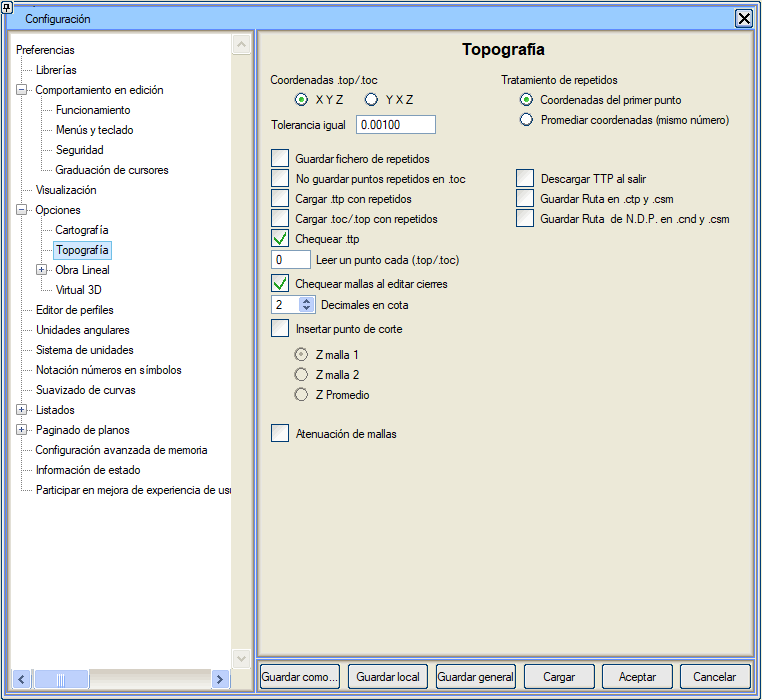
| .top/.toc Koordinatları |
.top ve .toc dosyalarının yüklenmesi için, dosyanın XYZ mi yoksa YXZ formatında mı geldiğini seçmeye izin verilir.
|
| Tolerans |
Aralarındaki mesafe bu değerden küçük olan iki nokta için, program bunları tekrar eden nokta olarak kabul eder.
|
| Tekrar Edenler Dosyasını Kaydet |
Bu kutucuk etkinleştirilirse, bir .ttp, .top veya .toc dosyası yüklenirken tekrar eden noktalar bulunduğunda, bunların listesini içeren bir repetidos.res dosyası oluşturulur.
|
Tekrar eden noktaları .toc'da kaydetme
|
Bu kutucuk etkinken, programı .toc dosyalarında tekrar eden noktaları kaydetmemeye zorlar. Bu aynı zamanda ağların dosyada kaydedilmeyeceği anlamına da gelir.
|
| Tekrarlı .ttp yükle |
Bu kutucuk etkinleştirilmişse, tekrar eden noktalar içeren .ttp dosyalarını yüklemek mümkün olacaktır, ancak daha sonra uygulama bunu üçgenlemeye izin vermeyecektir.
|
| Tekrarlı .toc yükle |
Varsayılan olarak devre dışı. Bazen, yorumlanması istenen komutlar geldiğinde veya harita olarak ele alınacağında, tekrar eden noktalar içeren bir .toc dosyası yüklemek ilginç olabilir. Bu seçenek etkinleştirilir ve tekrar eden noktalar içerebilecek bir .toc yüklenirse, üçgenlemeden önce, tekrar edenleri ortadan kaldırmak için bir nokta kontrolü yapılmalıdır.
|
| .ttp'yi kontrol et |
Bir .ttp dosyası yüklerken ağların tutarlılığının kontrol edilip edilmeyeceğini belirtir (kesişen ağları aramak,...). Seçenek etkinleştirildiğinde, bu tür dosyaların yükleme süreci daha yavaştır.
|
| Her x noktadan birini oku (.top/.toc) |
Bitişik kutucukta belirtilen x değeri başına bir topografik düğüm noktası yükler. |
| Kapalı sınırları düzenlerken ağları kontrol et |
Kapalı sınırlara nokta ekleme veya çıkarma işlevlerinde ağlarla kesişim kontrolünü devre dışı bırakmayı sağlar. Bu, kapalı sınırları daha özgürce düzenlemeyi ve tamamlamayı sağlar (geçici olarak kapalı sınırlar ve ağlar kesişebilir), ancak düzenlemenin sonunda seçeneği yeniden etkinleştirmek ve ağlar ile kapalı sınırların bir kontrolünü yapmak tavsiye edilir.
|
| Kottaki Ondalıklar |
Programın göstermesi istendiğinde (düğme [co/CO]), topografik noktaların kotlarının temsil edileceği ondalık basamak sayısı.
|
| Kesim noktası ekle |
Bu kutucuk etkinleştirildiğinde, yükleme sırasında ön-ağ ağları kesişirse, bunları silmek yerine kesim noktasında bir nokta oluşturur. Bu şekilde, kesişen iki ağ, ortak bir noktaya sahip dört ağ haline gelir. Kullanıcı, bu kesim noktası için istediği kotu belirleyebilir: birinci ağın kotu, ikincinin kotu veya her ikisinin ortalaması. Oluşturulan noktalar, metin alanında bir "+" işareti taşıdıkları için tanımlanabilir. Bu işlev sadece EDM'den TOP'a dönüşümde veya bir .top dosyası yüklenirken etkinleştirilir.
|
Ağların Soluklaştırılması
|
Kullanıcı, ön-ağ ve otomatik ağları soluklaştırmayı sağlar.
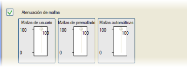
|
| Tekrarlıların İşlenmesi |
Burada, tekrar eden noktalar içeren bir dosya yüklenirken programın davranışı belirtilir (artı/eksi tolerans): ilkini mi tutacağı yoksa eşit noktaların koordinatlarının ortalamasını mı alacağı. İkinci durum, sadece tekrar eden noktaların koordinatları eşit (artı/eksi tolerans) olmasının yanı sıra, aynı nokta numarasına sahip olmaları durumunda çalışır.
|
| Çıkarken .ttp'yi kaldır |
Bu seçenek etkinleştirilirse, TOPOGRAFYA menüsünden çıkıldığında program, bellekteki tüm ilgili verileri kaldırır. |
Yolu .ctp ve .csm'de Kaydet
|
Bu dosyalardan, çalışma klasöründen veya ./ttp'den farklı klasörlerden yüklenen ttp veya ttg dosyalarını geri yüklemeyi sağlar. Veriler .isa dosyaları aracılığıyla dışa aktarılacaksa bu seçenek önerilmez.
|
| Y.N.B. Yolunu .cnd ve .csm'de Kaydet | Öncekine benzer şekilde, Yoğun Nokta Bulutları veritabanlarını çalışma klasöründen farklı klasörlere kaydetmeyi sağlar. Bu durumda, .isa üzerinde bir etkisi yoktur. |
Tüm bu seçenekler program yapılandırmasıyla kaydedilir.
Topografik Noktaların Düzenlenmesi
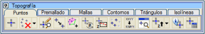Düzenleme seçeneklerini açıklamadan önce, TOPOGRAFYA ortamındayken, topografik noktalara yakalama imkanının etkinleştirildiğini belirtmek gerekir; bu da tanımlanacak ağların topografya noktalarıyla doğru bir şekilde ilişkilendirilmesini sağlar.
Serbest Yakalama kutucuğuna tıklayabilir ve topografik noktalara yakalamayı seçebiliriz (ekranın sol alt köşesi).
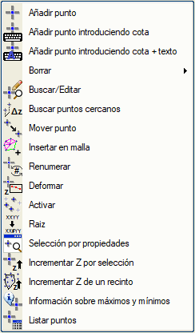[Topografya] → [Noktalar] açılır menüsünden, topografik nokta düzenleme seçenekleriyle ilgili bir dizi seçeneğe erişilir:
| Nokta Ekle |
Aşağıdaki seçeneklere sahibiz:
Nokta Ekle: Grafiksel veya sayısal olarak yeni bir nokta ekler.
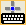 Kot Girerek Nokta Ekle: Önceki seçenekle aynı şekilde, grafiksel veya sayısal olarak yeni bir nokta ekler, ancak daha sonra noktanın yerleştirilmesini istediğimiz kot girilir.
Eğer üçgenleme zaten yapılmışsa ve bir nokta eklemesi mevcut bir üçgenin içine yapılırsa, atanan kot, üç köşe noktasının ortalamasıdır. Orijinal üçgen yok edilir ve yeni noktada köşe noktası olan üç tane oluşturulur.
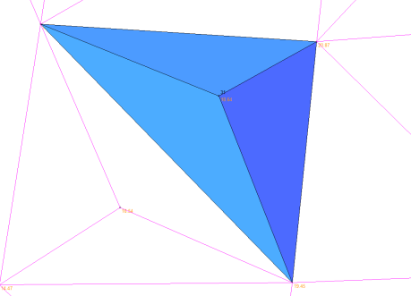
Eğer üçgenleme yoksa, klavyeden başka bir değer belirtilmedikçe, kot olarak mevcut kot kullanılır.
|
| Sil |
Aşağıdaki seçeneklere sahibiz:
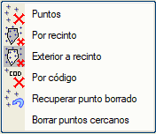
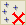 Noktaları Sil: Üzerlerine tıklayarak topografik düğüm noktalarını siler. Bu araçtan, pencere içindeki tüm topografik noktaları silmek için bir pencere de oluşturulabilir.
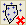 Kapalı Alanı Sil: Kapalı bir alanın içindeki topografik düğüm noktalarını siler. Aşağıdakileri seçebileceğimiz bir iletişim kutusu görünecektir:
- Kapalı bir çizgi
- Belirli bir tipteki tüm kapalı çizgiler
- Belirli bir modeldeki tüm kapalı çizgiler
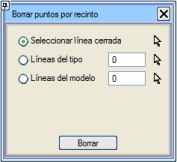
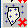 Dış Kapalı Alana Göre Sil: bir kapalı alanın dışındaki topografik noktaları silme seçeneği.
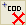 Koda Göre Sil: Etkinleştirdiğimiz koda bağlı olarak belirli bir koda sahip tüm topografik düğüm noktalarını silmeyi sağlar.
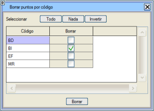
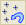 Silinen Noktayı Geri Getir: Silinmiş olan bir veya daha fazla noktayı kurtarmayı sağlar.
|
| 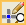 Düzenle/Bul |
Noktanın koordinatlarını, numarasını, kodunu (tip), metnini ve modelini değiştirmeyi sağlar. Bir topografik nokta değiştirildikten sonra, program gerekirse üçgenlemeyi yeniden yapar. Kullanıcı, topografyanın farklı noktalarını interaktif olarak seçebilir, çünkü iletişim kutusu içeriğini son seçilen noktaya göre günceller.
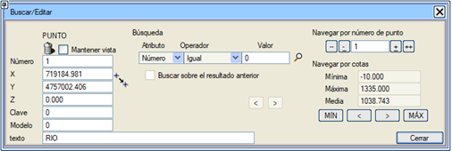
Model özelliği, EDM'ye dönüştürüldükten sonra noktanın geçeceği modele atıfta bulunur. Üçgenlemede sadece aktif modellere atanmış noktaların kullanılacağı dikkate alınmalıdır.
Bu iletişim kutusu, ayrıca, o kritere uyan noktaları bulmak için bir alan seçmeyi de sağlar. Bu, butonu ile gerçekleştirilir. Bir nokta bulunduğunda, üzerine bir yakınlaştırma yapar ve onu diğer noktalardan ayırır. Eğer aynı değere sahip daha fazla nokta varsa, bu butona art arda basılarak sırayla vurgulanır.
Görünümü Koru, mevcut noktayı sildikten sonra bir sonraki noktaya olan çerçeveyi korumayı sağlar.
|
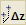 Yakın Noktaları Bul
|
Bu araç, belirli bir değerden daha küçük, çok yakın bir noktalar arası mesafeye sahip ve belirlediğimiz bir kot farkı olan topografik noktaları bulmayı ve değiştirmeyi sağlar.
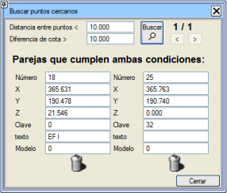
|
| 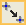 Taşı |
Bu seçenek, bir noktayı üçgenlemeden önce veya sonra grafiksel olarak taşımayı sağlar. Eğer üçgenlenmemişse, program yeni konumda noktayla ilişkili ön-ağ ağlarının diğer ağlarla kesişmediğini kontrol eder. Eğer üçgenlenmişse, noktadan çıkan üçgenlerin ağlarının mevcut diğer ağlarla kesişmediği kontrol edilir. |
| 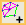 Ağa Ekle |
Bu seçenek, fare ile mevcut ağlara nokta eklemeyi sağlar. Nokta, ağı oluşturan iki noktanın kotuna göre kot alır. Ağ, iki yeni ağ ile değiştirilir. Seçenek döngüsel olarak etkin kalır. |
| 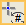 Yeniden Numaralandır |
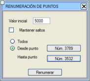Bu seçenek, kullanıcı tarafından belirlenen bir başlangıç değerinden başlayarak noktaların numaralandırmasını değiştirmeyi sağlar. Bu yeniden numaralandırma, tümüne veya bir nokta aralığına uygulanabilir. İkinci durumda, aralık sayısal veya grafiksel olarak belirlenir.
Aralıkları Koru seçeneği etkinleştirildiğinde, başlangıç değeri eklenirken noktaların numaralandırma atlamalarına uyulup uyulmayacağı seçilebilir.
|
| 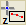 Deformasyon |
Bu seçenek, deformasyon mesafesinde belirlenen bir yarıçap içinde ve kullanıcının dikey kaydırıcılarla değiştirebileceği bir Gauss eğrisini takip ederek kotları değiştirmeyi sağlar. Ayrıca kot artışı (pozitif veya negatif) ve deformasyon katsayısı da belirtilmelidir. Formülün hangi noktadan uygulanacağı da istenir. Sonuç olarak, deformasyon mesafesi içindeki bir mesafedeki noktaların kotları, formülü ve kot artışını takip ederek değiştirilir.
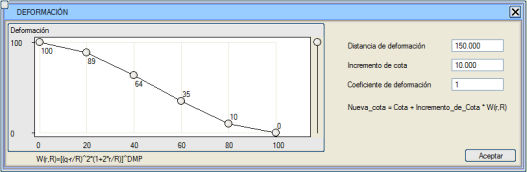
|
| Aktivasyon |
Kodlarına veya anahtarlarına göre noktaları etkinleştirmeyi/devre dışı bırakmayı sağlar.
Bu seçenekte, yüklenen noktalardaki farklı anahtarlar gösterilir. Kullanıcı, uygun gördüğü anahtarları etkinleştirebilir/devre dışı bırakabilir, böylece bir üçgenleme yapıldığında, bu sadece etkin anahtarlara sahip noktaları dikkate alır.
Aktivasyonlar için kullanılan kod, .toc dosyalarından gelen noktaların taşıdığı koddur. |
 Kök Kök |
Bu işlev bir kök ister ve o köke sahip noktaların metinlerini, metnin geri kalanını bir yorum gibi koyarak değiştirir. Örneğin, kök olarak BKM girilirse ve BKM25, BKM4,... metinlerine sahip noktalar varsa, bunları BKM #25, BKM #4,... olarak dönüştürür. |
| Özelliklere Göre Seçim |
Bu seçenek, ortak bir özelliğe sahip olan nokta bulutundan birkaç nokta seçmeye yarar. Bu amaçla, kullanıcıdan filtrelemek istediği özelliği, hangi operatörü ve değeri girmesi istenir. Noktaları seçimden çıkarmak için <Esc> tuşuna basılabilir veya bu iletişim kutusundan operatör olarak Hiçbiri seçilebilir.
Önceki seçimle birleştir kutucuğu işaretlenirse, önceden seçilmiş noktalara yeni seçimden gelenler eklenir.
Etkin bir nokta seçimi olduğunda, Sil ve Kapalı Alanı Sil seçenekleri sadece seçili noktaları etkiler.
Topografik nokta seçimi yapıldıktan sonra, Uygula'ya tıklayarak önceki seçimi kaybetmeden başka seçimler yapabiliriz. Seçimi tamamladığımızda Kabul Et'e basarız ve aşağıdaki iletişim kutusu aracılığıyla tüm seçili noktaların kotunu, nokta numarasını, kodunu, metnini ve modelini aynı anda değiştirebiliriz.
Ayrıca seçili nesneleri silebiliriz.
|
Z Artır
|
Seçime Göre Z Artışı: İnteraktif olarak veya farenin sol tuşuna basılı tutarak bir pencere aracılığıyla seçeceğimiz noktaların kotunu artırmayı sağlar. Pencere içinde kalan tüm noktalar seçilecektir.
Kapalı Alana Göre Z Artışı: Kapalı bir alan (önceden ekranda kapalı olma özelliğiyle çizilmiş olması gereken bir çizgi) içindeki kotu artırmayı sağlar, bu da önceden seçmeye gerek kalmadan bir dizi noktayı ayırmayı mümkün kılar. |
Maksimum ve Minimum Bilgileri
|
Topografya menüsünde yüklenen verilerin bilgilerini ve aynı zamanda minimum ve maksimum koordinatlarını içeren bir kutu gösterir.
simgesine tıklandığında, sizi seçilen noktaya ve onun düzenleme menüsüne götürür.
|
Noktaları Listele
|
Yüklenen noktaların bilgilerini görmeyi ve bir veri gridinden düzenlemeyi sağlar. Gridin herhangi bir hücresine tıklandığında, program sizi o hücreye karşılık gelen topografik noktaya konumlandırır.
|
Ön-Ağların Düzenlenmesi
TOPOGRAFYA ortamı üç tür ağ arasında ayrım yapar:
- Ön-ağlar: Giriş veri dosyasında tanımlanmış olanlardır; ya bir .top/.toc dosyası (anahtarlar ve kodlar), bir .ttp dosyası (geçici topografya) aracılığıyla ya da EDM'den dönüşümden geldiği ve her orijinal köşe noktasına ve sembole, anahtarı geldiği tip olacak olan bir topografik düğüm noktası atandığı için. Camgöbeği renginde temsil edilirler.
- Kullanıcı veya manuel ağlar: Kullanıcının interaktif olarak ekledikleridir ve mevcut çizgi tipine karşılık gelen renkle temsil edilirler.
- Otomatik veya üçgenleme ağları: Programın üçgenleme algoritmasıyla oluşturduklarıdır ve eflatun renktedirler.
Ön-ağların düzenlenmesi, [Topografya] → [Ön-Ağ] menüsünde gruplandırılmış aşağıdaki seçeneklerden oluşur:

Dönüşümü Yeniden Yükle
|
Ön-ağ ağlarını yeniden oluşturur, ancak bunları kullanıcı ağlarına dönüştürür. Bu oluşturma, yüklemeden yapılan kadar mükemmel olmayabilir, çünkü filtrelenmiş tekrar eden noktalar nedeniyle bilgilerin bir kısmı kaybolmuş olabilir. |
| Polilineden Oluştur |
Bir polilineden yola çıkarak ve çizgi ile topografya noktaları arasında izin verilen bir tolerans olan bir mesafe belirterek bir ön-ağ yapmayı sağlar.
Süreç, noktaların çizgiye olan izdüşümlerini ve mesafelerini hesaplar, nokta vektörünü sıralar ve bu noktaları birleştirir.
Bu prosedür, kodları olmayan noktalarla ön-ağ yapılması gerektiğinde kullanışlı olurdu, bu şekilde çizginin izini takip ederek belirtilen mesafeden daha yakın olan noktaları birleştirir.
|
Tümünü Sil
|
Tüm ön-ağ ağlarını siler. |
Pencere İle Sil
|
Yaptığımız pencerenin içinde veya kısmen içinde olan tüm ağları siler. Farenin sol tuşuna tıklayarak.
|
| Çizgileri Kopyala |
Veri dosyasında önceden tanımlanmış çizgileri, veri noktalarının sahip olduğu sıra ve çizgi tipi kodlarını kullanarak grafik düzenleme sistemine kopyalar. |
Kodlar ve Komutlar
|
Bu seçeneğe tıklandığında, .toc dosyalarından gelen noktalarla ilişkili metinlerin işlenmesi için bir pencere açılır. Tüm bu seçenekler, [Kaydet] ve [Yükle] seçenekleriyle kaydedilebilen veya yüklenebilen bir kod sözlüğü oluşturur. Kod sözlüğü dosyalarının da .cod uzantısı vardır (dolayısıyla, .dxf/.dwg ve .dgn dosyalarını içe aktarma sözlükleriyle karıştırılmamalıdır).
Bu .cod dosyaları projemizin kütüphanesine veya varsayılan olarak ISPOL klasörünün kütüphanesine kaydedilebilir veya yüklenebilir.
Bu ekranda, topografik düğüm noktalarının sahip olduğu farklı metin kodları görünür ve her metin kodu için kullanıcı, bunun bir çizgi mi yoksa tekil bir nokta mı olduğunu  belirleyebilir. belirleyebilir.
Eğer yüklenen dosya bir .toc ise, bu ekran dosyanın içerdiği kodlarla görünür. Bir kod, çizgi başlangıç ve bitiş komutlarıyla görünürse çizgi olarak kabul edilir, aksi takdirde nokta olarak kabul edilir.
Kodlar, [Alfabetik Sırala] butonu ile alfabetik olarak listelenebilir. [Bul] butonu, sözlükte bir kodu hızlıca bulmayı sağlar. Ayrıca, her kod, yanında görünen kutucuğunun işaretli olup olmamasına bağlı olarak etkin veya değil olabilir. Tüm kodları etkinleştirmek ve devre dışı bırakmak mümkündür. Devre dışı bırakılan kodlar, zincirleme veya yorumlama işlemlerine katılmaz.
Daha sonra .cod dosyası olarak kaydedebileceğimiz komutundan veri ekleyerek kendi sözlüğümüzü oluşturabiliriz.
simgesinden, yüklü olan sözlüğün verileri silinebilir.
Sözlük yapılandırıldıktan sonra, onu kullanan belirli işlemleri yapma zamanı gelmiştir; bunlar arasından şunlar bulunur:
- Kodları Yeniden Yükle: Program, daha sonra eklenmiş olabilecek yeni topografik nokta kodlarını kod listesine eklemeyi sağlar.
- Hızlı Doldurma: Kod sözlüğünde aynı nesne türünü ilişkilendirmeyi sağlar. Ön ek ve tip belirtildiğinde, o tip sözlüğün o ön ekle başlayan tüm girişlerine doldurulur. Bu, arazide aynı nesneyi temsil eden ve örneğin ARB01, ARB02,..., ARB0n şeklinde kodlanmış noktalar alındığında kullanışlı olur; öyle ki, hepsinin ortak ön eki (ARB) ve temsil edilmek istenen sembol tipi (örneğin 9) belirtildiğinde, o koda sahip tüm noktaları o sembol tipiyle temsil eder.
- Kodu Koda Dönüştür: Yüklenen noktaların kodunu, sözlükte tanımladığımız çizgi veya sembol tipine göre değiştirir. Noktaların metin alanında sözlüğün kodunu taşıması gerekir.
- Tüm Kodlardan: Her topografik düğüm noktasının kodunu, sözlüğümüzde atanan tipe, Çizgi veya Nokta olmasına bakılmaksızın dönüştürür.
- Sadece "Nokta" Olarak Tanımlanan Kodlardan: Her topografik düğüm noktasının kodunu, sözlüğümüzde atanan tipe dönüştürür, ancak sadece Nokta olarak tanımlanmış olanları.
- EDM Oluştur: Zincirlenmiş ağları çizgilere ve tekil düğüm noktalarını veya noktaları, sözlükte belirlediğimiz ağ ve düğüm noktası tipiyle sembollere dönüştürür. Ayrıca, zincirlenmiş ağlarda semboller de oluşturur; eğer ilgimizi çekmezse, bunları sembol tipleri kontrolü menüsünden devre dışı bırakabiliriz.
Ağlardan ve düğüm noktalarından çizgilere ve sembollere geçmenin başka bir yolu da Topografya > Dönüşüm > Haritaya Dönüştür (TOP -> EDM) açılır menüsüne gitmektir.
- Zincirle: Aynı koda sahip noktaları birleştirir. Program, sadece belirli bir koda sahip noktaları mı birleştirmek istediğinizi, tüm kodları mı dikkate almak istediğinizi veya bir kodu hariç tutmak mı istediğinizi seçmenize olanak tanır.
- Sil: Tüm ağları silmeyi sağlar.
- Yorumla: Aynı koda sahip noktaları birleştirir, önceden ağları kontrol eder ve komutları (Zincir Başlangıcı B, Zincir Sonu S, Kurp Başlangıcı KB...) yorumlar.
Hem zincirleme hem de yorumla işleminde, tekil noktalar söz konusu olduğunda program bunları zincirlemeye çalışmaz. Çizgi durumunda, zincirlemeye çalışır ve eğer topografya kayan menüsündeki ağları kendi renkleriyle çizme seçeneği etkinse, ağlarını o çizgi tipinde gösterir.
- Hayali Noktaları Sil: Programın yayları ayrıklaştırmak için oluşturduğu ancak veri topografik noktaları olmayan hayali noktaları siler.
- Maksimum Yay-Kiriş Mesafesi: Yayların ne kadar hassasiyetle ayrıklaştırılacağına atıfta bulunur.
Ayrıca, Kesişimlere İzin Ver (üçgenleme yapma) seçeneği işaretlenmişse, program .toc dosyasını yorumlarken kesişen ağları silmez. Bu seçenek, .toc'tan elde edilen verilerin üçgenlenmeyeceği, doğrudan bir .edm/.edb dosyasına aktarılacağı durumlarda kullanışlıdır.
TOC Komutlarını Yapılandır :
.toc dosyaları aşağıdaki komutları içerebilir:
B: Bir zincirin Başlangıç Noktası.
S: Bir zincirin Son Noktası.
K: Düz Kapanış.
KB: Bir kurbun Başlangıç Noktası.
KO: Bir kurp üzerindeki Ara Nokta.
KS: Bir kurbun Son Noktası.
KK: Bir zincirin ilk noktasında kapanış noktası. Yayın oluşturulması için program KK komutunun noktasını (ör. i), i'ye en yakın önceki aynı koda sahip noktayı ve zincirin başlangıç noktasını kullanır. Yayın oluşturulmasında, yayların ayrıklaştırılması için hassasiyet değerine göre gerekli olan hayali noktaları oluşturur.
HN: Hayali Nokta (program tarafından bir kurp çizmek için oluşturulur).
D: Dikdörtgen.
Kullanıcı, çeşitli seçeneklere (zincir başlangıcı, zincir sonu,...) karşılık gelen komutları belirleyebilir veya programın önerdiklerini kabul edebilir.
Bu komutlar, programın diğer oturumlarında kullanılmak üzere kütüphaneye ( .cmn uzantılı bir dosyada) kaydedilebilir.
Not: Noktaların, ağların numaralandırmasını dinamik olarak görmenize veya bir harita dosyasına (.edm) dönüştürmenize yardımcı olmak için farenin sağ tuşunu kullanmak oldukça kullanışlıdır.
Bu dönüşümü yaparken, eğer topografya düğüm noktalarının kod sözlüğünde belirlenen sembolle noktalara geçmesini istiyorsak, ekteki şekilde görüldüğü gibi Topografik noktanın kodunu tip olarak kullan kutucuğunu etkinleştirmemiz gerektiğini belirtmek isteriz:
|
Ağ Sınıfını Değiştir
|
Bu araç sayesinde ön-ağ, kullanıcı veya otomatik ağların tiplerini değiştirebiliriz.
Seçilen ağlar, Ağları Sil kutucuğuna basılarak silinebilir.
|
Öznitelikleri Aktar
|
Sınıfını ve tipini almak için bir ağ ve bu sınıf ve tipi ona koymak için başka bir ağ olmak üzere tekrar tekrar iki ağ ister.
|
Öznitelikleri Birden Fazla Ağa Aktar
|
Sınıfını ve tipini almak için bir ağ ve daha sonra bu öznitelikleri ona koymak için ardışık ağlar ister.
|
Kesit
|
Bu seçenek, kesiti yapmak için kullanıcıdan bir bant ister ve ilgili profili grafik penceresinin sağ alt kısmında gösterir. |
Kullanıcı Ağlarının Düzenlenmesi
Kullanıcı ağları özel bir renkle temsil edilebilir. Bunun için, mevcut çizgi tipini istenen renge sahip bir tiple değiştirmek ve Ağ Rengi'ni etkin bırakmak yeterlidir. Bu düğme devre dışı bırakılırsa, kullanıcı ağları sarı renkte çizilir.
Kullanıcı ağlarıyla ilgili olanaklara gelince, ISTRAM®/ISPOL® AĞLAR menüsünde gruplandırılmış aşağıdaki seçenekleri sunar:
| Ekle |
Ön-ağ ağlarına, mevcut diğer ön-ağ veya kullanıcı ağlarıyla kesişmedikleri sürece istenildiği kadar manuel olarak eklenebilir. Eğer zaten bir üçgenleme varsa ve dolayısıyla otomatik ağlar (eflatun renkli) mevcutsa, hala ağlar eklenebilir ve bunlar otomatik olanları kesebilir, ancak ön-ağ veya kullanıcı ağlarını kesemez. Zaten mevcut bir otomatik ağla çakışan bir kullanıcı ağı eklemek, sadece onun kullanıcı tipine dönüştürülmesi anlamına gelir.
|
| Zincirle |
Üç seçenek:
- Tek Tek Zincirle: Ekle seçeneğine benzer, ancak zincirlenmiş ağlar oluşturma avantajına sahiptir. Bu seçenekle, topografik nokta olmayan bir yere tıklanırsa, ağı oluşturabilmek için onu oluşturur.
- EDM Çizgileri Oluşturarak Zincirle: Bu seçenek Zincirle seçeneğine benzer, ancak ayrıca ağların altına mevcut tipte bir EDM çizgisi oluşturur.
- Zincirle: Aşağıdaki seçeneklerle zincirleme yapabileceğim bir iletişim kutusu belirir:
- Tümü: Nokta numarasına göre ağlarla birleştirir.
- Çizgi Koduna Göre Birleştir: Koda göre ağları zincirler; belirli bir kod, tüm kodlar veya hariç tutulacak bir kod seçilebilir.
- Klavyeden Birleştir: Programın hangi düğüm noktasından hangi düğüm noktasına numaralarını kullanarak zincirleme yapmak istediğinizi belirtmenizi sağlar.
- Aralık: İletişim kutusunda belirttiğimiz değere göre zincirleme yapılır. Her düğüm noktası, her 2 düğüm noktası, vb...
Bu seçenekleri kullanırken [ESC] tuşuna basıldığında, mevcut zincir kesilir, ancak seçenekten çıkılmaz ve yeni bir zincir başlatılabilir.
|
| Bant ile Sil |
Herhangi bir türdeki ağları ve onlara dayanan üçgenleri (varsa) bant ile silmeyi sağlar. Bu alan üçgenlerden boş kalır ve oluşturulan boşluk yeniden üçgenlenemez. Boşlukta eşyükselti eğrileri oluşturulmaz. |
Pencere İle Sil
|
Yaptığımız pencerenin içinde veya kısmen içinde olan tüm ağları siler. Farenin sol tuşuna tıklayarak. |
| Uzunluğa Göre Kes |
Bu seçenek, verilen değerden daha büyük bir uzunluğa sahip olan ağlara nokta enterpole eder. Oluşturulan noktalar için üç X, Y, Z koordinatı da enterpole edilir ve bir ağda oluşturulan noktalar, verilen uzunluğa eşit veya daha küçük bir mesafede eşit aralıklı olur. |
Ağ Sınıfını Değiştir
|
Bu araç sayesinde ön-ağ, kullanıcı veya otomatik ağların tiplerini değiştirebiliriz.
Seçilen ağlar, Ağları Sil kutucuğuna basılarak silinebilir.
|
| Öznitelikleri Aktar |
Sınıfını ve tipini almak için bir ağ ve bu sınıf ve tipi ona koymak için başka bir ağ olmak üzere tekrar tekrar iki ağ ister. |
| Öznitelikleri Birden Fazla Ağa Aktar |
Sınıfını ve tipini almak için bir ağ ve daha sonra bu öznitelikleri ona koymak için ardışık ağlar ister. |
Kesit
|
Bu seçenek, kesiti yapmak için kullanıcıdan bir bant ister ve ilgili profili grafik penceresinin sağ alt kısmında gösterir. |
Kontur, Kapalı Sınır ve Adacıkların Düzenlenmesi
Hem kapalı sınırlar hem de adacıklar, içlerinde topografik noktalar içerebilen veya içermeyen kapalı alanlardır. Fark, üçgenleme yaparken programın sadece kapalı sınırların içindeki noktaları dikkate alması, adacıkların içindeki noktaları ise göz ardı etmesidir.
Burada bahsedilen kapalı alanların harita ortamına özgü olduğunu, dolayısıyla EDM kapalı alanlarıyla karıştırılmaması gerektiğini belirtmek gerekir; ancak, elbette, bunlardan topografik kapalı alanlar elde etmek mümkündür. Üçgenleme yaparken, program aşağıdaki adımları gerçekleştirir:
- Eğer aktif kapalı sınır veya adacık yoksa, mevcut ön-ağ ve kullanıcı ağlarına saygı duyarak tüm nokta bulutunu üçgenler.
- Eğer sadece aktif kapalı sınırlar varsa, o zaman sadece kapalı sınırların içinde üçgenleme yapar.
- Eğer sadece aktif adacıklar varsa, o zaman adacıkların içi hariç her yeri üçgenler.
- Eğer hem aktif adacıklar hem de kapalı sınırlar varsa, o zaman kapalı sınırlara ve kapalı sınırların içindeki adacıklara saygı duyar (resimde gösterildiği gibi).
Kapalı sınırların ve adacıkların etkinleştirilmesi ve devre dışı bırakılması menüde belirtilir; öyle ki, değiştirilebilir butonlara basılarak kapalı sınırların ve adacıkların etkinleştirilip etkinleştirilmediği belirtilir. Açıkçası, hem kapalı sınırlar hem de adacıklar, oluşturulduktan sonra üçgenlemeye dahil edilir ve ayrıca .ttp dosyalarına kaydedilir.
Kapalı sınırlar ve adacıklarla çalışmak, örneğin bir işin ilerlemesine göre bir üçgenlemeyi güncellemeye olanak tanıdığı için, üçgenlemelerle çalışırken çok fazla esneklik sağlar.
Kapalı Sınır ve Adacık Oluşturma ve Düzenleme
Kapalı sınırlar ve adacıklar oluşturmak ve onlarla çalışmak için seçenekler şunlardır:
| Oluştur |
Daha önce gördüğümüz gibi aktif olan seçeneğe bağlı olarak kapalı sınırları veya adacıkları oluşturmak için aşağıdaki seçenekleri ayırt ederiz:
 / Noktalardan Kapalı Sınır / Adacık Oluştur: Ekrandaki topografik noktalardan her birine tıklayarak kapalı sınırı oluşturur. / Noktalardan Kapalı Sınır / Adacık Oluştur: Ekrandaki topografik noktalardan her birine tıklayarak kapalı sınırı oluşturur.
/ Kapalı Çizgiden Kapalı Sınır / Adacık Oluştur: Bu seçenek, bir EDM haritasındaki kapalı bir çizgiye dayanarak bir kapalı sınır/adacık oluşturur. Bu seçeneği kullanırken, program EDM çizgisini seçmenizi ve topografik noktaların aranacağı bir tolerans aralığı belirtmenizi ister (algoritma toleranstan bağımsız olarak en yakın noktayı kullandığı için, fazla büyük bir değer kullanmak tavsiye edilir). Ayrıca, çizginin köşe noktası olmasalar bile, çizginin segmentleri üzerinde bulunan tüm topografya noktaları da kapalı sınırın köşe noktaları olarak eklenir.
Referans olarak kullanılan EDM çizgisi, kapalı sınır/adacığın sahip olması amaçlanan nokta sayısından daha fazla veya eşit sayıda noktaya sahip olmalıdır (her topografya noktasının yakınında bir köşe noktası). Örneğin, bir güzergah projesini üçgenlemek için, projenin kamulaştırma sınırı çizgisi ve 5 metreden fazla bir tolerans kullanılabilir.
/ Çizgi Tipinden Kapalı Sınır / Adacık Oluştur: Bu seçenekle bir çizgi tipi seçilir ve program otomatik olarak o tipteki tüm çizgileri arar ve bulunan her bir çizgiyle bir kapalı sınır/adacık oluşturur. Çok sayıda kapalı sınır veya adacık oluşturulması gerektiğinde çok uygundur.
/ Modelden Kapalı Sınır / Adacık Oluştur: Bu seçenek, kullanıcıdan kapalı sınırlara veya adacıklara dönüştürülmesini istediği kapalı çizgilerin bulunduğu modeli ister. Program, o modeldeki tüm kapalı çizgileri arar ve ilgili kapalı sınırları/adacıkları oluşturur. Bu seçenek, aynı anda çok sayıda kapalı sınır veya adacık oluşturmak için de çok kullanışlıdır.
/ Ağdan Kapalı Sınır / Adacık Oluştur: Program bir ağ seçer, bunu dahili olarak bir çizgiye dönüştürür ve verilen bir toleransla en yakın topografik noktayı arayarak bu noktalardan bir kapalı sınır oluşturur. Bu ağ, gelecekteki kapalı sınırın veya adacığın kapatılabilmesi için en az iki ardışık ağ segmentinden oluşan aynı tipte olmalıdır.
Üçgen Kenarından Oluştur: Zaten tanımlanmış olan üçgenlemenin kenarından kapalı sınırı oluşturur.
Dışbükey Oluştur: Nokta bulutunun dışbükey kapalı sınırını oluşturur (normal bir üçgenleme yapıldığında oluşacak kenara eşdeğer olurdu). Bu seçenek sadece kapalı sınırlara özeldir.
|
| Sil |
Aşağıdaki seçenekleri ayırt ederiz:
Sil: Kullanıcı tarafından seçilen bir kapalı sınırı/adacığı siler.
Tümünü Sil: Tüm kapalı sınırları/adacıkları siler.
|
Değiştir / Tipi Değiştir
|
Değiştir: Zaten oluşturulmuş bir kapalı sınırı veya adacığı, yeni noktalar ekleyerek, noktaları silerek veya ona nokta ekleyerek değiştirebileceğim.
Tipi Değiştir: Bir kapalı sınırı bir adacığa ve tersini geçirmeyi sağlar.
|
Adacıkları Temizle
|
Üçgenleme yapıldıktan sonra, adacıkların iç üçgenlerini temizler. Üçgenleme sırasında, Adacıklar seçeneği açıkça etkinleştirilmedikçe, adacıkların temizlenmesi otomatik olarak yapılmaz. Bu seçenek sadece adacıklara özeldir.
Doğru bir temizlik için adacıkların ilgili ağlardan geçmesi gerekir, mevcut ağları kesemezler. Adacıkları temizlemeden önce, adacığı kesebilecek ağları silebilmek için noktaların, ağların, üçgenlerin, adacıkların ve kapalı sınırların bir kontrolünü yapmanız önerilir.
|
Konturları EDM'ye Aktar
|
Kapalı sınırları/adacıkları EDM çizgilerine dönüştürür. |
Düzenlerken ağları kontrol et kutucuğu aracılığıyla kapalı sınırlar/adacıklar, kapalı sınırlara nokta ekleme veya çıkarma işlevlerinde ağlarla kesişim kontrolünü devre dışı bırakmayı sağlar. Bu, kapalı sınırları daha özgürce düzenlemeyi ve tamamlamayı sağlar (geçici olarak kapalı sınırlar ve ağlar kesişebilir), ancak düzenlemenin sonunda seçeneği yeniden etkinleştirmek ve ağlar ile kapalı sınırların bir kontrolünü yapmak tavsiye edilir.
Otomatik Ağların Düzenlenmesi. Üçgenleme
Aşağıda, programın üçgenlemeler oluşturma ve düzenleme konusundaki olanakları açıklanmaktadır. Hepsi [Topografya] → [Üçgenler] açılır menüsü altında gruplandırılmıştır:
| Üçgenleme |
Üçgenleme: Mevcut ön-ağ ve kullanıcı ağlarını dikkate alarak üçgenleme yapan çok verimli bir algoritmadır. Program, dikkate alınacak maksimum nokta sayısı konusunda herhangi bir engel koymaz, sadece üçgenlemenin yürütüldüğü makine ile sınırlıdır. Bu nedenle, milyonlarca nokta söz konusu olduğunda bilgisayarın RAM belleğini maksimum düzeyde boşaltmak tavsiye edilir.
Program, kot farklılıklarını görsel olarak ayırt etmek için farklı renklerde dolgular kullanarak üçgenlemeyi oluşturur. Program, düşük kotlar için sıcak renkler ve yüksek kotlar için soğuk renkler kullanır. Bu görselleştirmeyi devre dışı bırakmak için, Üçgen Rengi kutucuğunu devre dışı bırakmak ve bu dolguların kaybolması için yeniden çizmek yeterlidir. Üzerine yeniden bir aktivasyon yapılması, tekrar görünmelerine neden olacaktır.
Tamamla: Bu seçenek, örneğin başka bir dosyadan gelen yeni noktaların eklendiği, daha önce yapılmış bir üçgenlemeye dayanarak yeniden bir üçgenleme yapmayı sağlar.
Bir Üçgen Oluştur: Üçgenin üç noktasını seçerek bir üçgen oluşturmayı sağlar.
|
Üçgenleri Sil
|
Aşağıdaki seçenekleri ayırt ederiz:
Tek Tek Sil: Fare ile zaten oluşturulmuş üçgenleri tek tek silmeyi sağlar. Bir kullanıcı veya ön-ağ ağını silmeyi gerektirecekse üçgenleri silmez (bu durumlar için Ağlar menüsündeki Ağları Sil veya Bant ile Sil seçeneğini kullanın).
Ağları Sil: Ağlar alt menüsünde bulunanla aynı seçenektir.
Pencere İle Sil: Yaptığımız pencerenin içinde veya kısmen içinde olan tüm ağları siler. Farenin sol tuşuna tıklayarak.
Uzunluğa Göre Sil: Uzunluğu, isteğine yanıt olarak verilen değerden büyük olan otomatik ağları siler. Ayrıca sadece çevreden mi yapacağını sorar, bu durumda sadece dış kenarla veya bir "delik" ile bitişik olan otomatik ağları siler.
Minimum üçgen yüksekliği: Bir otomatik ağ analiz edildiğinde (ön-ağ veya kullanıcı tarafından tanımlanmamış) ve bu ağ üçgeni silmek için maksimum uzunluğa sahip değilse, o zaman o ağ ile karşı köşe arasındaki üçgenin yüksekliği de kontrol edilir. Eğer yükseklik tanımlanan minimumu karşılamıyorsa, üçgen silinir.
Bu, üçgenlemenin çevresinde oluşan bazı sivri üçgenleri de ortadan kaldırmayı sağlar.
Ön-ağ ve kullanıcı ağları silinmez, bu nedenle kontrol uzunluğundan daha uzun ağlardan oluşan bir çevre, ön-ağ veya kullanıcı ağlarıyla tamamlanmış ve kapalı bir çevre oluşturan bir çevre, silinmeyecek korumalı bir alan oluşturur.
Tümünü Sil: Tüm otomatik ağları ve tüm üçgenleri yok ederek daha sonra yeniden üçgenleme yapmaya olanak tanır. Ön-ağ ve kullanıcı ağları kalır.
|
Temizle
|
Aşağıdaki seçenekleri ayırt ederiz:
Temizle: Eğer üçgenleme yapıldıktan sonra kesişen kullanıcı ağları eklenmişse, bu seçenek oluşturulan ağlarla uyumsuz olan üçgenleri yok etmek için kullanılabilir.
Adacıkları Temizle: Üçgenleme yapıldıktan sonra, adacıkların iç üçgenlerini siler (dolayısıyla, Konturlar menüsündeki Temizle ile aynı eylemi gerçekleştirir).
Düzlemleri Temizle: Aynı ön-ağ zincirinin içbükey bölgelerinde üç köşe noktasını da aynı zincir üzerine dayayarak oluşabilecek üçgenleri değiştirir. Bu, ön-ağlar eşyükselti eğrilerinden geldiğinde tipiktir; iki farklı zincire dayanmak yerine aynı zincirin noktalarıyla üçgenler oluşur.
|
| Değiştir |
Ortak bir kenara sahip iki üçgeni, ortak kenarı bu üçgenlerin tanımladığı dörtgenin diğer köşegeni olacak şekilde diğer ikisiyle interaktif olarak değiştirmeyi sağlar.
|
| Ölçüm |
Bu seçenek bir karşılaştırma düzleminin kotunu ister ve şunları döndürür:
- Üçgenlerin plan projeksiyonunun 2D alanı.
- Üçgenlerin gerçek yüzeyine karşılık gelen 3D alanı.
- Üçgenlenmiş yüzey ile karşılaştırma düzlemi arasında kalan prizmanın hacmi.
- Yüzde ve altmışlık derece cinsinden hesaplanan minimum, maksimum ve ağırlıklı ortalama eğimler.
İki yüzey arasındaki hacmi hesaplamak istenirse şunlar dikkate alınmalıdır:
- İki yüzeyin de aynı kontura sahip olması gerekir.
- Yarma ile dolgu dengeleneceği için yüzeyler kesişmemelidir.
- Ayrı ayrı üçgenlenmeli ve aynı karşılaştırma düzlemi kullanılarak ölçülmelidirler.
- Nihai hacim, iki kısmi hacmin farkıdır.
Bu seçenek ayrıca çalışma klasöründe aşağıdaki formatta topomed.res adında bir dosya oluşturur:
|
Eğim Bilgisi
|
Eğimi kullanıcı tarafından verilen iki veri arasında olan üçgenlerin alanını, ağırlıklı ortalama eğimini, minimum eğimini ve maksimum eğimini ölçmek için bir yardımcı program. Bilgilerle bir liste oluşturulmasına izin verilir.
Maksimum ve/veya minimum eğim kriterleri ile üçgenlerin seçimini seçmeye ve değiştirmeye, ayrıca seçime grafik olarak üçgen eklemeye veya çıkarmaya izin verilir.
|
Boşalt
|
İki seçenek:
Boşalt: Bu seçenek, veriler zaten üçgenlendiğinde çalışır ve seçilen kapalı alanın içindeki/dışındaki tüm noktaları, ağları ve üçgenleri siler.
Kapalı alanın kenarını kesen üçgenler, kapalı alanın kendi kenarı üzerinde gerekli ağları ve noktaları oluşturarak parçalanır, ancak kullanıcı kenarlar için kapalı alan çizgisinin kotunu mu yoksa üçgenlerin kotunu mu istediğini seçebilir (Sınır Z'sini kullan seçeneğinin işaretli olup olmamasına göre).
Ağların orijinal tiplerini koru kutucuğu mevcuttur. Bu seçenek etkinleştirildiğinde, seçilen kapalı alanın dışındaki ağlar tanımlarını değiştirmez ve kullanıcı, ön-ağ veya otomatik ağ olsun, verilen stillerini korur.
SAM'a Göre Boşalt:
Mevcut üçgenlemeden, bir .ttp dosyasının kapladığı alanı siler. Bu, Virtual 3D için çakışmayan modeller elde etmeyi sağlar.
|
| Kapalı Alanlara Göre Kaydet |
Her seçilen kapalı alan için, içinde bulunan nokta, ağ ve üçgen modeliyle bir .ttp, .dwg/.dxf veya bir .dgn dosyası oluşturmayı sağlar.
Tüm kapalı alanlar tek bir .dgn dosyasında veya her kapalı alan bir .dgn dosyasında kaydedilebilir.
.dgn dosyasında oluşturulan nesneler: Shape.
Kapalı kapalı alanların seçimi, tek tek çizgilere veya çizgi tipine göre olabilir. Oluşturulan dosyaların adı, belirlenen temel ada göre değişir.
|
| Filtrele |
Bir üçgenlemeyi önemli ölçüde 'hafifletmeyi' sağlar, çünkü bu algoritma, üçgenlemenin kenarında olmayan ve bir ön-ağ veya kullanıcı ağına ait olmayan ve kotu ile bu nokta olmadan oluşturulan modeldeki koordinatlarına karşılık gelen kot arasındaki farkın önceden belirlenmiş bir toleransın altında olduğu üçgenleme noktalarını siler.
İki tür filtrelemeye izin verilir:
- Düzlemler: Kotu, kaldırılırsa oluşan yüzeye göreceli olarak önceden belirlenmiş bir değerin altında olan noktaları siler.
- Zirveler: Kotu, kaldırılırsa oluşan yüzeye göreceli olarak önceden belirlenmiş bir değerin üzerinde olan noktaları siler.
Her iki durumda da, üçgen oluşturan en yakın noktaya olan mesafe verilen bir değerden büyükse nokta silinmez.
- Her ikisi: İki filtrelemeyi aynı anda gerçekleştirir.
|
Topografyadan 3D tel kafes görünümünde topografik noktalar ve ağlar (üçgenlerinkiler dahil) gösterilir.
Eşyükselti Eğrileri Oluşturma. Tesviye Eğrileri
Eşyükselti eğrileri, bir araziyi tanımanın en yaygın yoludur. Ancak, profil hesaplarken ve rölyefin türüne bağlı olarak, bir tür veya başka bir eşyükselti eğrisi oluşturma aralığı belirlemek tavsiye edilebilir. [Topografya] → [Eşyükselti Eğrileri] açılır menüsünden aşağıdaki seçenekler mevcuttur:
Eşyükselti Eğrileri Oluştur
|
Üçgen model üzerinde seçilen mesafede eşyükselti eğrileri ve ana eğriler oluşturur.
Programa eşyükselti eğrileri arasındaki eğri aralığını belirtmemiz gerekecektir. Otomatik olarak L26 (Normal çizgiler) ve L27 (Ana çizgiler) tiplerini atar ve bunları mevcut modele ekler.
Eşyükselti eğrileri oluşturma sürecinin ilerlemesi sırasında, bu süreç <Esc> tuşu ile kesilebilir. O ana kadar oluşturulmuş olanlar kaybolur.
Eğer Tek bir kot eğrisi kutucuğu etkinleştirilirse, eşit aralıklı bir dizi yerine istenen kotta tek bir çizgi oluşturur.
Eşyükselti eğrileri hesaplandıktan ve en yaygın işlemler (topografik nokta ve ağ ekleme ve silme, nokta düzenleme,...) yapıldıktan sonra, program bunları otomatik olarak yeniden hesaplar.
Eşyükselti eğrileri istenildiği kadar oluşturulabilir, bu nedenle harita çizgilerini çoğaltmamak için dikkatli olmak gerekir.
Eşyükselti Eğrilerini Etiketleme: Bu kutucuğu etkinleştirerek, program ekranda görünen iletişim kutusu aracılığıyla normal eşyükselti eğrilerini (L26) ve ana eğrileri (L27) bir sembolle (S34 veya S42) etiketleme imkanı sunar.
|
Eşyükselti Eğrilerini Sil
|
Oluştur seçeneği ile oluşturulan son eşyükselti eğrilerini reddetmeyi sağlar. |
Kotları Yuvarla
|
Bu işlev, eşyükselti eğrisi olmayan çizgileri devre dışı bırakır, tam değerlere sahip olmayan eşyükselti eğrilerinin kotlarını yuvarlar ve belirtilen toleransları kullanarak aynı kottaki çizgileri birleştirmeye çalışır.
Bu komutla eşyükselti eğrilerinin kotları (Z) değiştirilir. Eğer bir üçgenleme dosyası (.ttp) getirilirse ve yeni kotlar çıkarılmak istenirse, yeni eşyükselti eğrileri oluşturulmalıdır.
|
Eşyükselti Eğrilerini Enterpole Et
|
Eşyükselti eğrileri arasına yeni eğriler eklemeyi sağlar. Bunun için kullanıcı şunları belirtmelidir:
- Başlangıç ve bitiş kotları.
- Eşyükselti eğrileri arasındaki aralık.
- Kısmi üçgenleme için dikkate alınacak maksimum ağ uzunluğu.
-
Eğer o tipteki tüm sembollerin kotları dikkate alınmak isteniyorsa, kotlu bir sembol (hiçbiri dikkate alınmak istenmiyorsa, ekranın herhangi bir başka bölgesine tıklamak yeterlidir).
Bu verilerle program, eşyükselti eğrilerinin köşe noktalarından ve seçilen tipteki noktalardan dahili olarak bir üçgenleme oluşturur. Ardından, belirtilen uzunluktan daha büyük olan ağları atar ve son olarak, belirtilen aralığa göre ve başlangıç ile bitiş kotları arasında eşyükselti eğrilerini oluşturur. |
Araziyi Yumuşat
|
Bu araç, topografik nokta modelini yumuşatarak elde edilen bir arazi modeli üzerinde, Yoğun nokta bulutları yardımcı programlarındaki yumuşatılmış eşyükselti eğrileri oluşturma aracına benzer bir şekilde, eşyükselti eğrileri oluşturur.
|
Diğer Araçlar:
Tümünü Sil:
Topografya açılır menüsünden, Tümünü Sil komutu ile tüm topografik öğeleri (ve isteğe bağlı olarak haritayı) bellekten kalıcı olarak silebilirsiniz.
Ekranın sağ tarafındaki sabit menüde de, bahsettiğimiz aynı seçeneği gerçekleştireceğiniz Tümünü Sil kutucuğu bulunmaktadır.
Kontrol Et:
Tekrar eden noktaların, kesişen ağların olup olmadığını kontrol etmeyi ve mevcut ağlara ve noktalara atıfta bulunan üçgenleri kontrol etmeyi sağlar. Herhangi bir tutarsızlık bulunursa, üçgen silinir ve bu durum errortopog.res dosyasında yansıtılır.
Adacıklar ve kapalı sınırlar etkinleştirildiğinde, kesişen ağları tespit etmesi durumunda bunların kontrolünü gerçekleştirir.
Boşluklarda üçgen oluştur etkinleştirildiğinde, bir üçgen oluşturan ve dış tarafından bir üçgen yapışık olan ancak iç tarafından olmayan üçlü ağ grupları aranır, daha sonra bu iç üçgenler oluşturulur.
Yüzey olarak kullanabileceğimiz .ttp dosyaları için önceden bir kontrol yapmak önemlidir.
Yardımcı Programlar:
[Topografya] → [Yardımcı Programlar] butonundan aşağıdaki seçenekleri içeren bir kutu açılır:
| Otomatik |
Ön-Ağ – Üçgenleme – Düz üçgenleri silme – Eşyükselti eğrileri oluşturma dizisini otomatik olarak gerçekleştirir. |
Sondajlar
|
Sondaj verileriyle yüzeylerin tanımı
Bir sondajdan toplanan bilgiler, geçilen yüzeylerin sayısal modellerini elde etmeyi sağlar. Verileri, her bölümün düşey açısını ve uzunluğunu ifade ederek sondaj ağzına göre referanslandırılmıştır.
Burada gösterilen örnekte 76, 77 ve 78 sayılarıyla kodlanmış farklı malzeme katmanlarıyla her bir temas noktası, o noktaya kadar olan sondaj bölümünün azimutu (AZ) ve düşey açısı (AV) cinsinden verilir ve üçüncü bir sütunda bunun uzunluğu belirtilir.
Ayrıca her sondaja ve sondajın her noktasına (malzeme) bir ad vermek de mümkündür.
[Yardımcı Programlar] → SONDAJLAR seçeneği, tüm bu bilgileri ve sondajları işlemek için çeşitli seçenekleri içeren bir iletişim kutusu açar:
Görüldüğü gibi, [Sil], [Araya Ekle], [Ekle], [Başlat] vb. seçenekler aracılığıyla yeni bir sondaj dosyası interaktif olarak oluşturulabilir veya mevcut bir dosya (örneğin veri ekleyerek) değiştirilebilir. Böylece, [Ekle] (sona yeni bir veri oluşturur) veya [Araya Ekle] (mevcut konuma oluşturur) butonu ile yeni sondaj verileri girilir.
Eğer girilen veri bir sondaj ağzıysa (arazi yüzeyinin bir noktası), o zaman satır [S] (Sondaj başlangıcı) ile başlamalıdır ve eğer yeni bir malzeme ile temas noktası ise, o zaman değiştirilebilir düğmenin [B] (Sondaj Bölümü) göstermesi gerekir.
İletişim kutusunun resminde görülebileceği gibi, bir sondaj ağzı söz konusu olduğunda girilen veriler onun koordinatlarıdır ve bir bölüm söz konusu olduğunda, azimut, düşey açı, uzunluk ve kod (yani, malzemeyi tanımlayan sayı).
3D görünümde, yüzeyin altında temsil edilen sondaj kolonları görülebilir:
Bu araç, her bir temas yüzeyinin üçgenlemesini elde etmeyi ve bunu kullanıcının seçtiği çizgi tipiyle temsil etmeyi sağlar. Örneğin, Kod alanına 76 ve Tip'e 23 belirtilirse ve ardından:
- Her bir sondajın 76 koduyla kodlanmış malzeme tabakasıyla kesişimlerine karşılık gelen topografik nokta bulutunu oluşturmak için [Nokta bulutu oluştur] butonuna basılır. Mantıksal olarak, bu nokta bulutu [DOSYALAR] → Kaydet'ten mevcut herhangi bir topografik dosya formatında kaydedilebilir.
- Önceki adımda oluşturulan bulutun üçgenlemesini elde etmek için [Üçgenle] seçeneği kullanılır. Bu üçgenleme, nokta bulutuyla birlikte, [DOSYALAR] → Kaydet aracılığıyla bir .ttp dosyası olarak da kaydedilebilir.
- Artık sadece önceki adımda elde edilen otomatik ağları [Üçgenleri Aktar] seçeneği ile EDM'ye aktarmak kalır; bu, üçgenlemeden gelen her ağ için belirtilen tipte (örnekte, tip 23) çizgiler oluşturur.
Bu işlemin sonucu resimde gösterilmektedir:
Üçgenlemeyi silmek için, [Üçgenleri Sil] butonuna basmak yeterlidir. Böylece, bu durumda 23 numaralı çizgi tipiyle oluşturulan, bir yeraltı tanımlayıcı nokta bulutundan başka bir şey olmayan bir tabaka sınırlayıcı yüzeyi (tavan veya taban) oluşturulmuş oldu.
Eğer bu süreç, farklı çizgi tipleri kullanarak her bir malzeme tabakası için tekrarlanırsa, sonunda hepsini içeren bir EDM elde edilir.
Dolayısıyla, her tabaka için bir yüzey tanımlamak ve hepsinin göründüğü profiller elde etmek mümkündür; böylece tüm malzemeler mükemmel bir şekilde ayırt edilebilir ve dolayısıyla, sondaj ağının izin verdiği kadar hassas bir stratigrafiye göre bir güzergah projesinde, kazıda vb. hacim hesabı yapılabilir.
Kopyala aracı aracılığıyla:
Bir sondajın başını ve yeni konumu grafiksel olarak seçerek bir sondajı kopyalamaya izin verilir. Eğer herhangi bir yakalama etkinse, yeni sondajın başının kotu yakalanan kotu alır.
Sondaj verileri, daha sonra sırasıyla [Kaydet] ve [Yükle] butonları aracılığıyla yüklenebilmesi için .sdo dosyalarına kaydedilebilir.
[.txt Yükle] aracı aracılığıyla:
Aşağıdaki formattaki dosyaları yüklemeyi sağlar:
**JEOTEKNİK BİRİM
NoktaID,X,Y,Z,Kalınlık,Jeoteknik birim
S- 1,508298.606,4788528.829,53.6,16.5,QRV
S- 1,508298.606,4788528.829,53.6,2.5,QA
S- 1,508298.606,4788528.829,53.6,0.5,C
S- 2 (DP),508385.835,4788591.354,43.8,14.3,QRV
S- 2 (DP),508385.835,4788591.354,43.8,7.7,QA
S- 2 (DP),508385.835,4788591.354,43.8,1.2,QE
S- 2 (DP),508385.835,4788591.354,43.8,0.9,C
ENKESİT EDİTÖRÜ'nde, ayrıca, bunları bir dizi enkesit üzerine yansıtmayı sağlayan [Sondajlar] seçeneği de bulunmaktadır.
|
Aplikasyon
|
Güzergah Projesi menüsü tarzında bir aplikasyon yapmamızı sağlar.
|
| Bilgi |
Bu seçenek, her an mevcut olan nokta, ağ ve üçgen sayısını gösterir.
|
| Kesit |
Bu seçenek, kesiti yapmak için kullanıcıdan bir bant ister ve ilgili profili grafik penceresinin sağ alt kısmında gösterir. |
| Duvarcık |
Programın, örneğin arazide bir duvarın eteği alındığında o duvarın başının ağlarını oluşturması için, mevcut iki ağa paralel ağları otomatik olarak oluşturmasına yarar.
Yatay artışı, dikey artışı ve duvarcığın yapılacağı iki ağı ister. Sonuç, seçilen her bir ağa paralel bir ağ oluşturmasıdır. Paralel ağlar, yatay artışa göre verilen mesafede konumlandırılır ve kotları, referans ağının kotu artı verilen dikey artış olur.
|
| Basamak |
Bu seçenek, kullanıcıdan bir yatay artış, bir dikey artış ve bir referans ağı ister. Sonuç, yatay artışa göre referans ağına paralel ve referans ağının kotu artı dikey artış kadar bir kota sahip bir ağın oluşturulmasıdır.
|
| XYZ -> EDM |
Bu seçenekle, XYZ, aXYZ, abXYZ, abcXYZ, abcdXYZ, abcdeXYZ veya YXZ formatlarındaki çeşitli topografya nokta dosyalarını EDM'deki noktalara dönüştürmek mümkündür.
Bu noktaların ekranda otomatik olarak yüklenmesini (Noktaları Yükle seçeneği) ve/veya noktalarla doğrudan .edb dosyaları oluşturulmasını (edb'ler oluştur seçeneği) belirtmek mümkündür.
Birden fazla nokta dosyasını tek seferde içe aktarmayı kolaylaştırmak için, kullanıcının belirttiği uzantıdaki dosyaların listeleneceği bir liste oluşturulur ve listedeki tüm dosyaların dönüşümü otomatik olarak yapılır. Dönüşümden sonra ekranda her dosyanın kapsadığı alanlar ve verilerinin kısa bir özeti gösterilir. Aynı özet, dönüşümde oluşturulan .ls2 uzantılı dosyada da listelenir. |
Madencilik Küt.
|
Topografik Karne
|
| Çizgi ile Kes |
Üçgenleme ağlarına, kullanıcı tarafından seçilen bir çizgi ile kesişimlerini ekler ve yeni köşe noktalarını kullanarak üçgenleri alt bölümlere ayırır.
Bu şekilde, entegre edilecek kapalı alanın sınır noktalarını kesilecek üçgenlenmiş model içinde bulundurma imkanına sahip olarak, bir üçgenlenmiş modelin diğerine entegrasyonu daha basit hale gelir.
Bu işlevin [Noktalar] → Kapalı Alanı Sil işleviyle birleşimi, .ttp modellerini karıştırırken veya güncellerken çok kullanışlıdır. |
Yoğun Nokta Bulutları
|
Yoğun Nokta Bulutları Menüsü
|
Eğim ile Nokta Oluştur
|
Araçtaki araca benzer bir yardımcı program: SAM Dosyasına Göre Eğimler.
|
Orijinal .toc Koordinatları
|
Bu yardımcı program, Boykesit->Araçlar->.toc Açılımı'nı tamamlar.
Örnek: Bir tünelin iç duvarlarına yerleştirilen kaplama levhalarının yüzey alanını ölçmek amaçlanmaktadır.
Levhaların konturları ve iç noktaları alınmış ve laminas.toc dosyasına kaydedilmiştir (Bu dosya, üst üste binen noktalar ve şakülden sapmalar olabileceğinden doğrudan üçgenlenemez).
Boykesit->Araçlar->.toc Açılımı aracı ile, topografyada yüklenebilen bir des#lamina.toc dosyası elde edilir (koordinat sistemi farklı olduğu için önceden yüklenmiş diğer tüm bilgileri siliyoruz). Bu dosya, topografya menüsünden üçgenlenebilir ve temizlenebilir.
Ekranda temizlenmiş üçgenleme ile: Topografya->Yardımcı Programlar->Orijinal .toc Koordinatları'nı çalıştırırız ve orijinal laminas.toc dosyasını seçeriz, bu da ağların ve üçgenlerin topolojisini koruyarak noktaların koordinatlarını değiştirir.
O zaman levhaların yüzey alanını şununla ölçebiliriz: Topografya->Üçgenler->Ölçüm.
Ayrıca, geometriyi içeren bir .ttp arşivleyebiliriz, ancak yeniden yüklemek için tüm kontrolleri devre dışı bırakmamız ve tekrar eden noktalara izin vermemiz gerektiğini unutmamalıyız, çünkü planda kesişen üçgenler olabilir.
|
Topografik Karne:
Topografik Karne açıklama menüsü.
|